«الجدول الذكي» برنامج يعمل على حاسوب المدرسة وحده ولا يحتاج إلى الإنترنت. يُدخل مسؤول الجدول بيانات المدرسة مرة واحدة (الصفوف والشعب والمواد والمعلمين وأوقات الدوام)، ثم يولّد البرنامج جدولاً أسبوعياً خالياً من التعارض، ويمكن تعديله وطباعته وحفظ عدة إصدارات منه.
افتح «جاهزية الجدولة» وتأكد من خلوها من الأخطاء (الفصل 6).
اضغط «بدء التوليد» وانتظر النتيجة (الفصل 7).
راجع الجدول وعدّله إن لزم، ثم «اعتمد» الإصدار (الفصول 9 و10 و11).
اطبع الجداول أو صدّرها إلى إكسل (الفصل 12).
SSTMARK0002Xكيف يُكتب هذا الدليل
الأسماء بين علامتي «» هي نصوص تراها على الشاشة بالحرف نفسه: أزرار وقوائم وعناوين.
كل الصور من برنامج حقيقي يعمل على مدرسة تجريبية خيالية («مدرسة الفجر الابتدائية»)؛ أسماء المعلمين فيها غير حقيقية.
المربعات الزرقاء نصائح، والصفراء تنبيهات مهمة، والرمادية معلومات إضافية.
SSTMARK0007X١
التثبيت والتشغيل
SSTMARK0004Xمتطلبات الحاسوب
البند
المطلوب
نظام التشغيل
ويندوز 10 (الإصدار 1809 أو أحدث) أو ويندوز 11، نسخة 64-بت فقط.
المعالج
حاسوب عادي بسرعة نحو 3 جيجاهرتز يكفي.
الذاكرة
4 جيجابايت. يعمل البرنامج بها، لكن توليد الجداول الكبيرة أبطأ.
المساحة
نحو 400 ميغابايت للبرنامج، وبضعة ميغابايتات للبيانات.
الإنترنت
غير مطلوب لا عند التثبيت ولا عند الاستعمال.
الطابعة
أي طابعة ورق A4 أو A3 مثبّتة على ويندوز.
SSTMARK0005Xخطوات التثبيت
انسخ ملف المثبّت «SmartSchoolTimetable-Setup-1.0.0.exe» إلى الحاسوب (من ذاكرة خارجية مثلاً) وانقر عليه نقراً مزدوجاً.
قد يعرض ويندوز نافذة زرقاء عنوانها «Windows protected your PC» (حماية ويندوز لجهازك). هذا يحدث مع أي برنامج جديد لا يملك شهادة نشر مدفوعة، وليس معناه أن الملف مضر. اضغط «More info» (مزيد من المعلومات) ثم «Run anyway» (التشغيل على أي حال).
إذا طلب ويندوز إذن المسؤول فاضغط «نعم».
اقرأ الترخيص واضغط «أوافق»، ثم اختر مجلد التثبيت (الافتراضي مناسب).
اختر إن أردت اختصاراً على سطح المكتب، وإن أردت تشغيل البرنامج تلقائياً عند بدء ويندوز (الخيار الثاني غير مفعّل افتراضياً).
اضغط «تثبيت»، وبعد الانتهاء اترك مربع «تشغيل الجدول الذكي الآن» مفعّلاً واضغط «إنهاء».
SSTMARK0006Xتشغيل البرنامج
افتح «الجدول الذكي» من اختصار سطح المكتب أو من قائمة «ابدأ». تظهر نافذة البرنامج بعد ثوانٍ قليلة. عند أول تشغيل بعد التثبيت قد يستغرق الفتح نحو 15 ثانية؛ وفي المرات التالية نحو 5 ثوانٍ.
عند إغلاق النافذة بزر الإغلاق يبقى البرنامج يعمل في الخلفية، وتظهر أيقونته قرب ساعة ويندوز (منطقة الإشعارات). انقر الأيقونة بزر الفأرة الأيمن لتجد:
فتح البرنامج: يعيد النافذة.
نسخة احتياطية الآن: يحفظ نسخة احتياطية فورية دون فتح النافذة.
إيقاف: يغلق البرنامج كلياً بعد تأكيد (تبقى بياناتك محفوظة).
SSTMARK0013X٢
التشغيل الأول وتسجيل الدخول
للبرنامج مالك واحد فقط: مسؤول الجدول. لا توجد حسابات جاهزة ولا كلمات مرور افتراضية؛ أنت تنشئ الحساب عند أول تشغيل.
SSTMARK0008Xإنشاء حساب المالك
اكتب اسم المستخدم (من 3 إلى 64 حرفاً).
اكتب كلمة المرور (8 أحرف على الأقل) ثم أعد كتابتها في تأكيد كلمة المرور. زر العين داخل الحقل يُظهر ما كتبت.
اضغط «إنشاء الحساب».
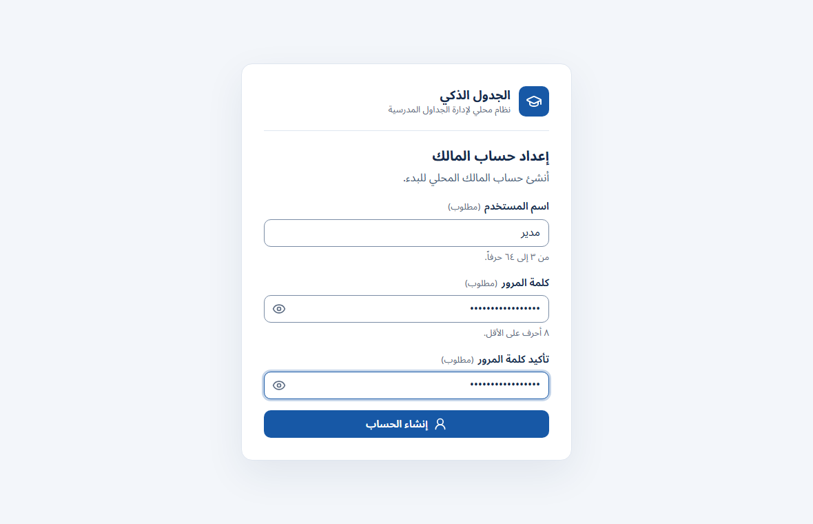
الشكل ٢-١: شاشة «إعداد حساب المالك» عند أول تشغيل.
SSTMARK0009Xرمز الاسترداد
بعد إنشاء الحساب يعرض البرنامج رمز استرداد من حروف وأرقام. هو الوسيلة الوحيدة لإعادة تعيين كلمة المرور إذا نسيتها، ولا يُعرض مرة أخرى.
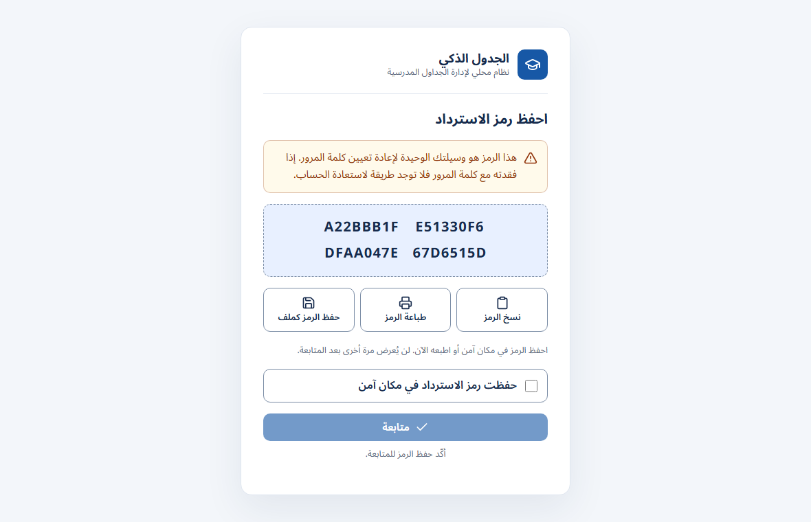
الشكل ٢-٢: شاشة «احفظ رمز الاسترداد». (الرمز في الصورة تجريبي.)
احفظ الرمز بإحدى الطرق: «نسخ الرمز» أو «طباعة الرمز» أو «حفظ الرمز كملف».
ضع الورقة أو الملف في مكان آمن لا يصل إليه غيرك.
فعّل المربع «حفظت رمز الاسترداد في مكان آمن» ثم اضغط «متابعة».
SSTMARK0010Xتسجيل الدخول
في كل مرة تفتح فيها البرنامج بعد إغلاق الجلسة تظهر شاشة «تسجيل الدخول». اكتب اسم المستخدم وكلمة المرور واضغط «دخول». إذا أخطأت ظهرت رسالة «اسم المستخدم أو كلمة المرور غير صحيحة» ويُمهلك البرنامج ثانية واحدة قبل المحاولة التالية.
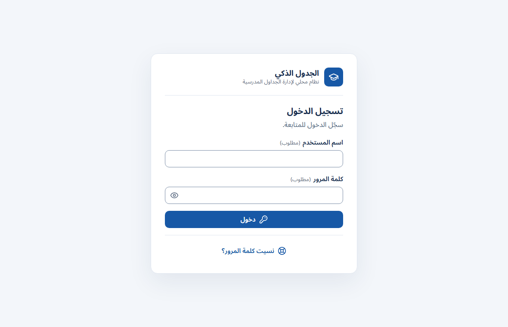
الشكل ٢-٣: شاشة «تسجيل الدخول».
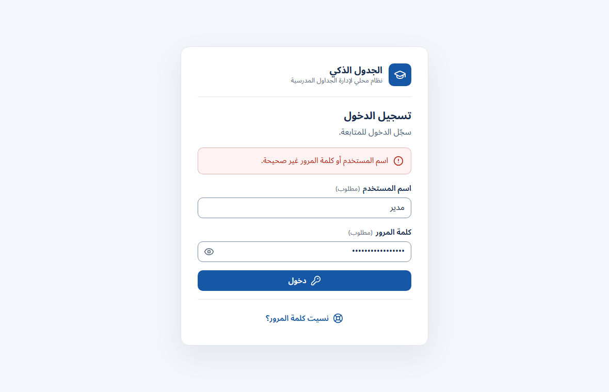
الشكل ٢-٤: رسالة الخطأ عند كلمة مرور غير صحيحة.
SSTMARK0011Xنسيت كلمة المرور
في شاشة الدخول اضغط «نسيت كلمة المرور؟».
اكتب رمز الاسترداد الذي حفظته، ثم كلمة المرور الجديدة وتأكيدها.
اضغط «إعادة تعيين كلمة المرور»، ثم «العودة لتسجيل الدخول».
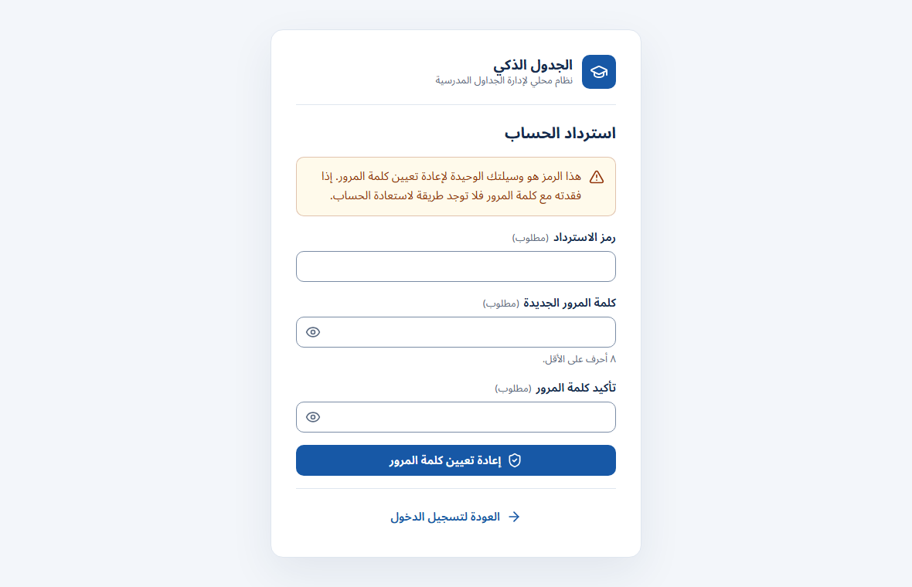
الشكل ٢-٥: شاشة «استرداد الحساب».
SSTMARK0012Xقفل الشاشة والقفل التلقائي
تقفل الجلسة تلقائياً إذا لم تستعمل البرنامج مدة معينة (30 دقيقة افتراضياً، وتُغيَّر من «الإعدادات ← الحساب والأمان»). ويمكنك قفلها بنفسك من قائمة المستخدم أعلى الشاشة (اسمك في الزاوية) ← «قفل الشاشة». بعد القفل اكتب كلمة المرور فقط للمتابعة وتبقى أعمالك كما هي.
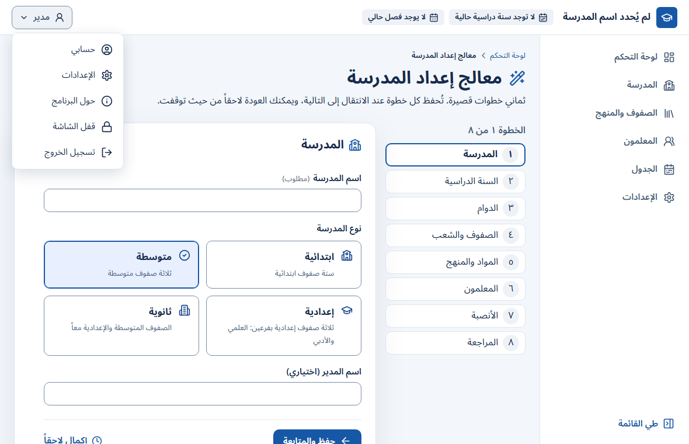
الشكل ٢-٦: قائمة المستخدم: حسابي، الإعدادات، حول البرنامج، قفل الشاشة، تسجيل الخروج.
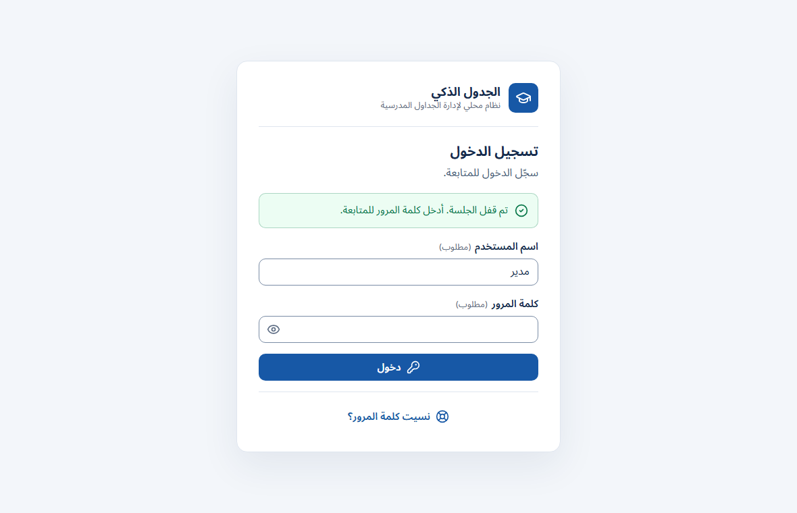
الشكل ٢-٧: شاشة الدخول بعد قفل الجلسة.SSTMARK0016X٣
لوحة التحكم والتنقل
«لوحة التحكم» هي الصفحة الأولى بعد الدخول. تعرض ملخصاً لبيانات المدرسة وما بقي من خطوات الإعداد.
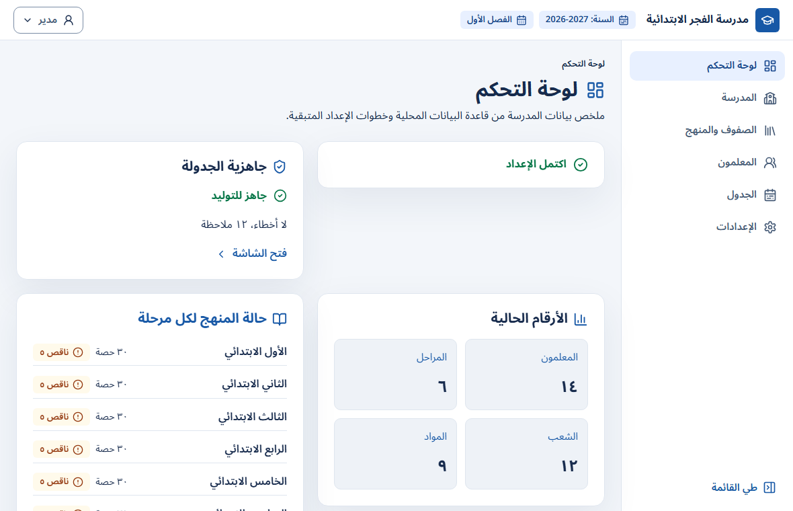
الشكل ٣-١: لوحة التحكم لمدرسة اكتمل إعدادها.
SSTMARK0014Xما تعرضه اللوحة
قائمة الإعداد: إن كان الإعداد ناقصاً تظهر بطاقة بالخطوات المتبقية مع زر لمتابعة المعالج؛ وعند اكتماله تظهر العبارة «اكتمل الإعداد».
جاهزية الجدولة: هل البيانات صالحة للتوليد، وعدد الأخطاء والملاحظات.
حالة المنهج لكل مرحلة: مجموع حصص المنهج في كل مرحلة، وما ينقصها عن سعة الأسبوع.
الأرقام الحالية: عدد المعلمين والمراحل والشعب والمواد.
العطلة القادمة: أقرب عطلة رسمية في التقويم.
تنبيه الجدول المعتمد: يظهر إذا تغيّرت بيانات المدرسة بعد الاعتماد بحيث صار الجدول المعتمد يتعارض معها (الفصل 11).
SSTMARK0015Xالقائمة الجانبية
البند
ما تجده فيه
لوحة التحكم
الملخص الذي سبق شرحه.
المدرسة
بيانات المدرسة والشعار، السنة والفصول، الدوام والحصص والجرس، التقويم الدراسي.
الصفوف والمنهج
المراحل والشعب، المواد، المنهج (حصص كل مادة).
المعلمون
قائمة المعلمين وأنصبتهم وقيودهم، واستيراد المعلمين من إكسل.
التفضيلات، الحساب والأمان، النسخ الاحتياطي، متقدم، سجل التغييرات، حول.
SSTMARK0019X٤
بيانات المدرسة
من «المدرسة ← بيانات المدرسة» تعدّل المعلومات التي تظهر في رأس كل جدول مطبوع.
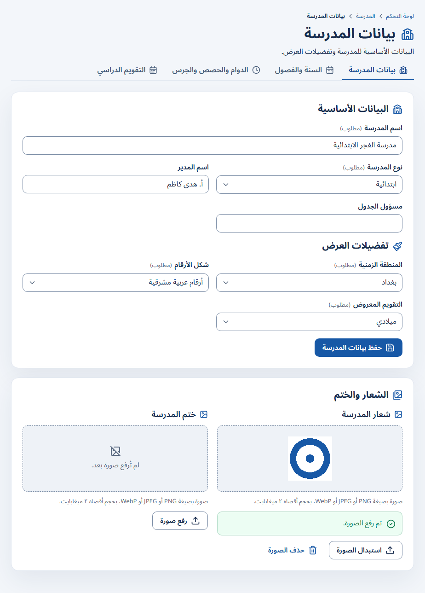
الشكل ٤-١: صفحة «بيانات المدرسة».
SSTMARK0017Xالحقول
اسم المدرسة (مطلوب) ونوعها (ابتدائية، متوسطة، إعدادية، ثانوية).
اسم المدير ومسؤول الجدول: يظهران في ذيل الجداول المطبوعة مع خانتي «التوقيع» و«الختم».
المنطقة الزمنية (بغداد) وشكل الأرقام (مشرقية ٠١٢ أو غربية 012) والتقويم المعروض (ميلادي).
SSTMARK0018Xالشعار والختم
اضغط «رفع صورة» تحت «شعار المدرسة» (أو تحت «ختم المدرسة»).
اختر ملف صورة بصيغة PNG أو JPEG أو WebP لا يزيد على 2 ميغابايت.
تظهر الصورة في رأس الجداول المطبوعة. لتغييرها اضغط «استبدال الصورة»، ولإزالتها «حذف الصورة».
SSTMARK0030X٥
معالج الإعداد
عند أول دخول يفتح «معالج إعداد المدرسة»، وهو ثماني خطوات قصيرة. تُحفظ كل خطوة عند الانتقال إلى التالية، ويمكنك الخروج في أي وقت بـ«إكمال لاحقاً» ثم العودة من لوحة التحكم أو من «الإعدادات ← عام ← معالج الإعداد». لا يُحذف شيء مما أدخلته عند إعادة فتح المعالج.
SSTMARK0020Xالخطوة 1: المدرسة
اكتب اسم المدرسة.
اختر نوع المدرسة: ابتدائية (ست صفوف)، متوسطة (ثلاثة)، إعدادية (ثلاثة بفرعين علمي وأدبي)، أو ثانوية (المتوسطة والإعدادية معاً).
اكتب اسم المدير (اختياري) واضغط «حفظ والمتابعة».
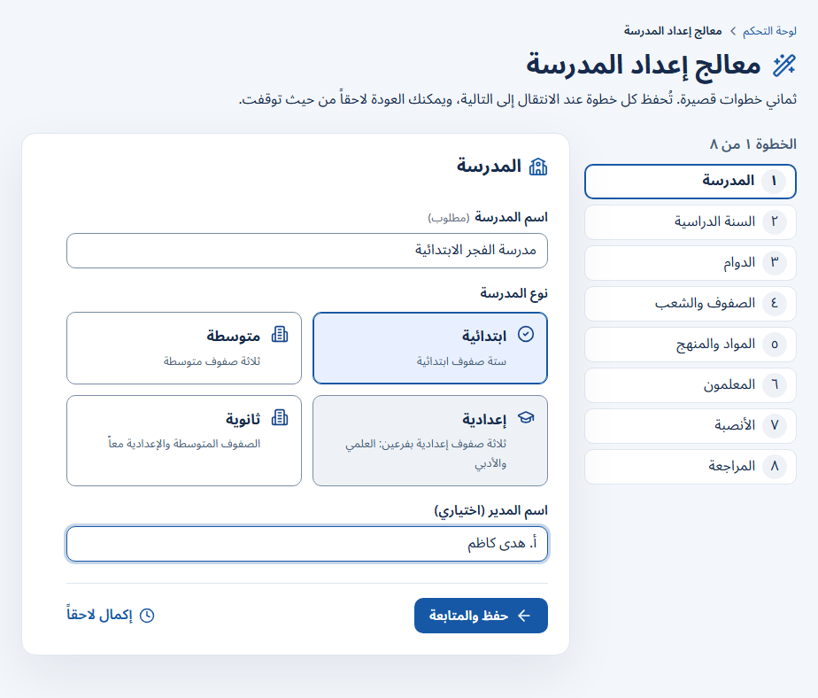
الشكل ٥-١: الخطوة الأولى: المدرسة.
SSTMARK0021Xالخطوة 2: السنة الدراسية
يقترح البرنامج السنة الحالية وفصليها الأول والثاني بتواريخ معقولة. عدّل تاريخ البداية والنهاية لكل فصل إن اختلفت عن تقويم مديريتك. ويمكنك تطبيق قالب العطل الرسمية العراقية ثم تعديل ما يلزم؛ فتواريخ بعض المناسبات الدينية تُعلن سنوياً بقرار، وتنبّهك الشاشة إلى ذلك.
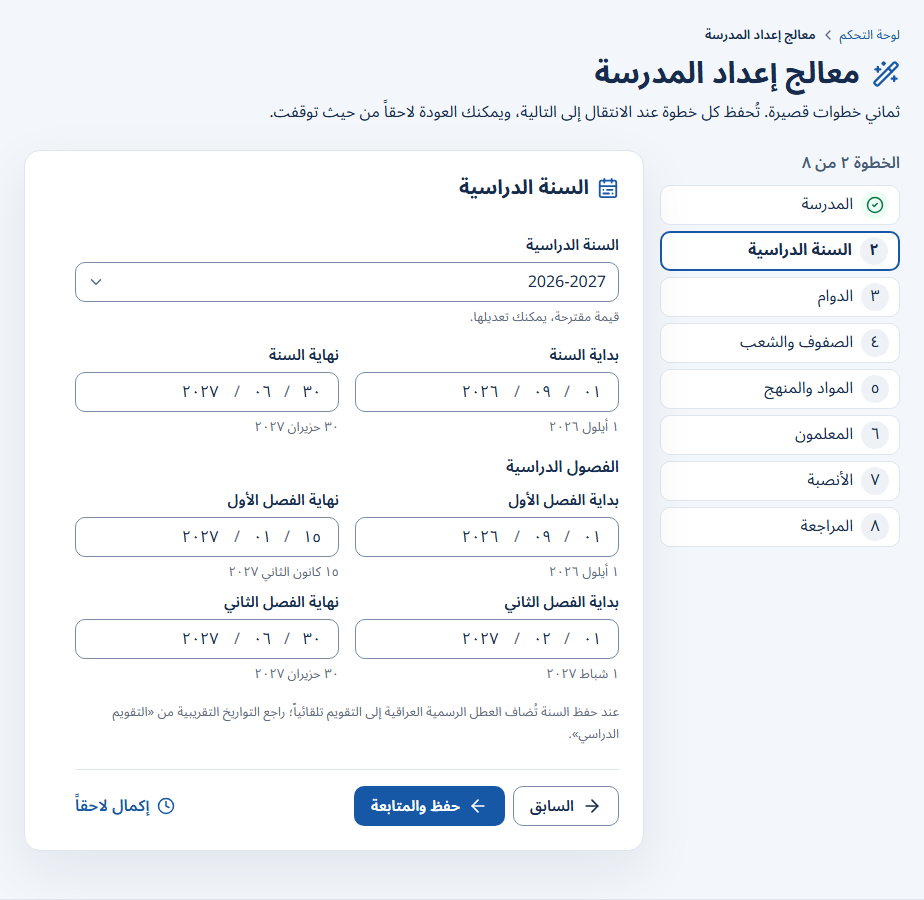
الشكل ٥-٢: الخطوة الثانية: السنة الدراسية والفصلان.
SSTMARK0022Xالخطوة 3: الدوام
هنا تحدد أيام الدوام ونظامه وأوقات الحصص:
أيام العمل: الأحد إلى الخميس عادةً.
نظام الدوام: «صباحي» أو «مسائي» أو «مزدوج». في المزدوج تبقى الشعب نفسها، لكن بعض الأيام صباحية وبعضها مسائية.
قالب الأوقات: اقتراح جاهز لبداية الدوام ومدة الحصة والاستراحات. كل قيمة قابلة للتعديل، ويمكنك اختيار «بدون قالب (أبدأ من الصفر)».
عدد الحصص في اليوم ومدة الحصة وأوقات الاستراحات. تُكتب الأوقات بنظام 12 ساعة (صباحاً/مساءً).
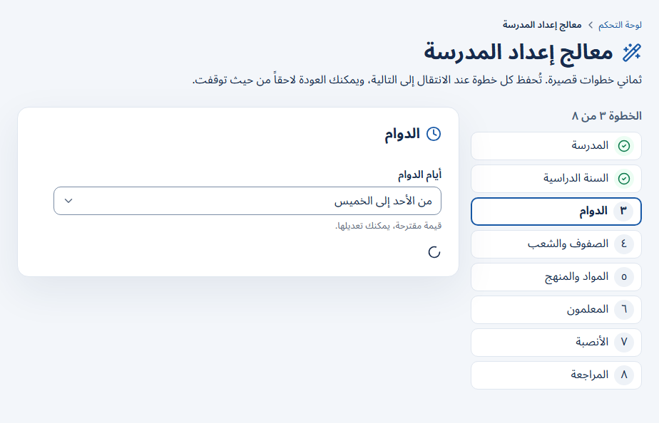
الشكل ٥-٣: الدوام الصباحي: القالب وعدد الحصص ومعاينة الأوقات.
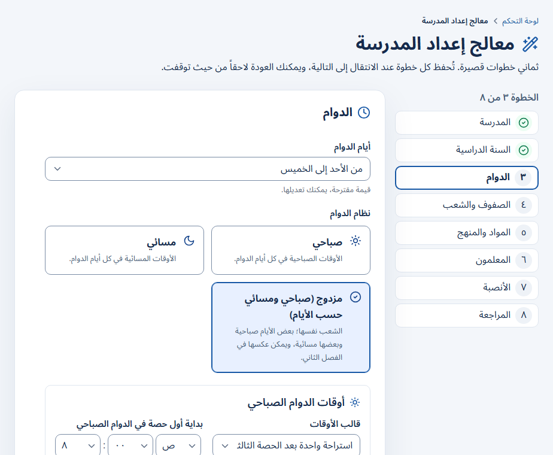
الشكل ٥-٤: الدوام المزدوج: أوقات الدوامين الصباحي والمسائي.
في الدوام المزدوج تظهر عند أسفل الخطوة قائمة «توزيع الأيام على الدوامين»: اختر أيام الدوام الصباحي لكل فصل، وما بقي من الأيام يصير مسائياً. زر «اعكس للفصل الثاني» يجعل أيام الصباح في الفصل الأول مسائية في الفصل الثاني والعكس، ليتناوب الصفوف بين الدوامين.
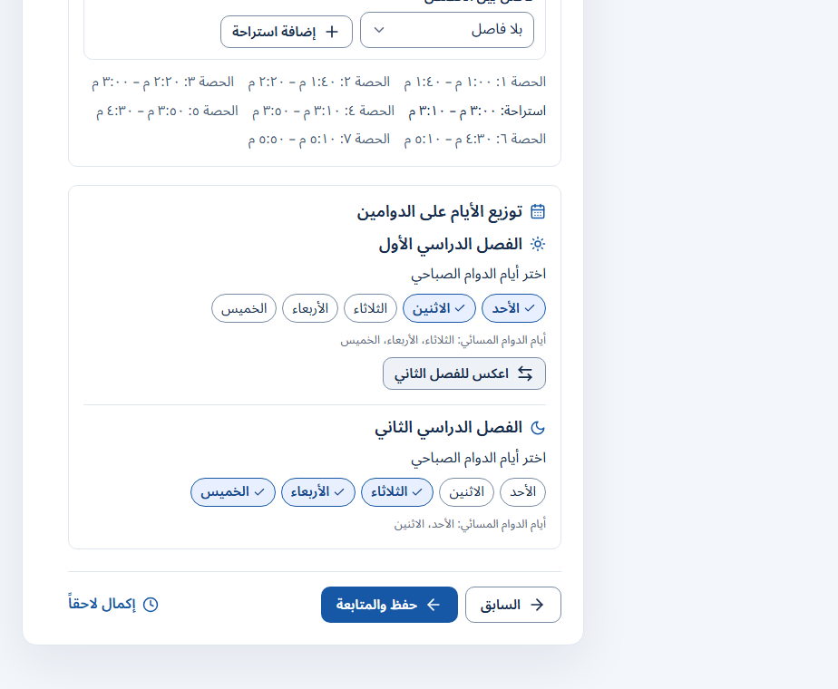
الشكل ٥-٥: توزيع الأيام على الدوامين لكل فصل دراسي.
SSTMARK0023Xالخطوة 4: الصفوف والشعب
في «إضافة المراحل من قالب» حدد الصفوف المطلوبة (مفعّلة افتراضياً حسب نوع المدرسة).
اختر عدد الشعب لكل مرحلة بالزرين + و −، وسمّ الشعب (أ، ب، ج...).
اضغط «معاينة» لترى ما سيُضاف، ثم «تطبيق القالب». لا يُحذف أو يُعدَّل أي سجل موجود.
الشكل ٥-٦: قالب المراحل والشعب.
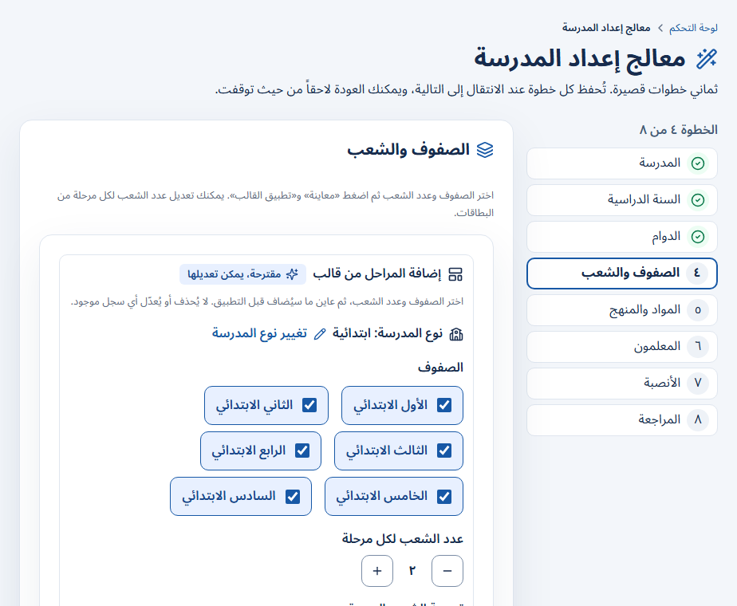
الشكل ٥-٧: اختيار الصفوف وعدد الشعب.
SSTMARK0024Xالخطوة 5: المواد والمنهج
تصف هذه الخطوة ما يُدرَّس وكم حصة في الأسبوع. وهي اختيارية: يمكنك تخطيها واستكمالها لاحقاً من «الصفوف والمنهج».
أضف المواد من المقترحات (الأزرار) أو اكتب اسم مادة جديدة. تظهر المواد المضافة بعلامة «مضافة».
تعرض الشاشة المنهج الرسمي المقترح: لكل مرحلة عدد الحصص المقترح لكل مادة. اضغط «تعبئة المنهج» لتعبئة الجدول به.
راجع الجدول وعدّل أي خانة بالكتابة (الصف صف مادة، والعمود مرحلة). يعرض التذييل «المجموع مقابل السعة»: مجموع حصص المرحلة مقابل 35 حصة أسبوعياً مثلاً، ويحذّرك من النقص بعلامة «ناقص ٥» ومن الزيادة.
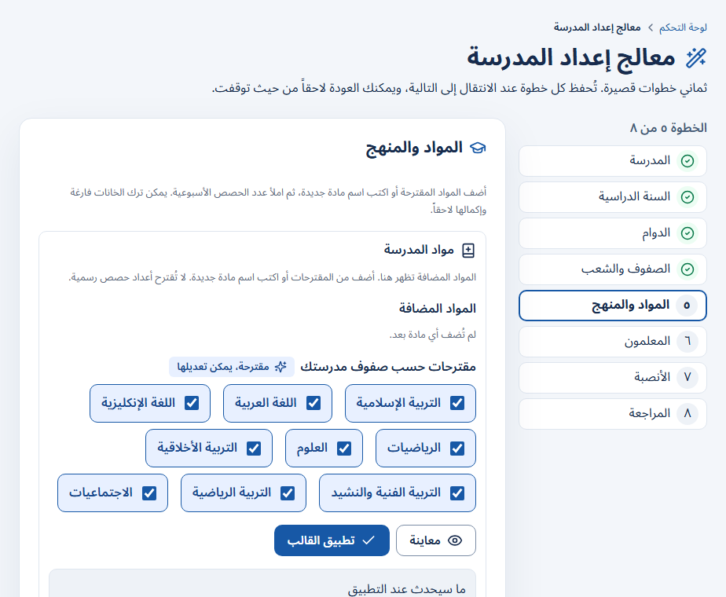
الشكل ٥-٨: إضافة المواد ومعاينة ما سيحدث عند تطبيق المقترح.الشكل ٥-٩: المنهج الرسمي المقترح لكل مرحلة، وجدول الحصص تحته.
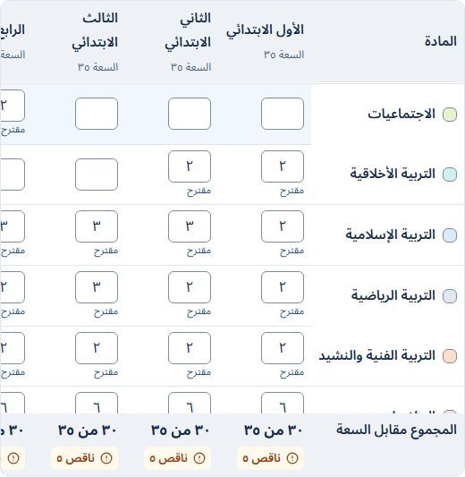
الشكل ٥-١٠: جدول المنهج بعد التعبئة: مجموع كل مرحلة مقابل السعة.
SSTMARK0025Xالخطوة 6: المعلمون
هذه الخطوة اختيارية أيضاً. هناك طريقتان لإدخال المعلمين:
SSTMARK0026Xالطريقة الأولى: اللصق من قائمة
في «إضافة معلمين من قائمة» الصق الأسماء الكاملة، اسماً في كل سطر.
تظهر معاينة قبل الحفظ؛ راجعها واحفظ.
SSTMARK0027Xالطريقة الثانية: استيراد من ملف إكسل
اضغط «استيراد من إكسل» ثم «تنزيل القالب» لتحصل على ملف جاهز، واملأه (الاسم الكامل في العمود الأول، والاسم المختصر اختياري).
اضغط «اختيار ملف إكسل» واختر الملف. تظهر معاينة لكل صف: «جاهز للاستيراد» أو «موجود مسبقاً» أو «لن يُستورد» مع السبب. لا يُحفظ شيء بعد.
اضغط «استيراد ١٤» (العدد حسب الصفوف الجاهزة). تظهر رسالة «اكتمل الاستيراد».
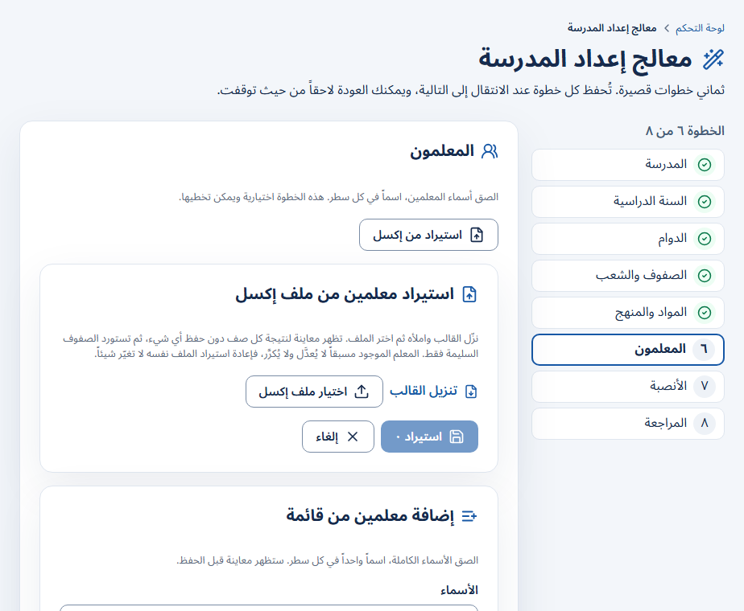
الشكل ٥-١١: لوحة استيراد المعلمين من إكسل داخل المعالج.
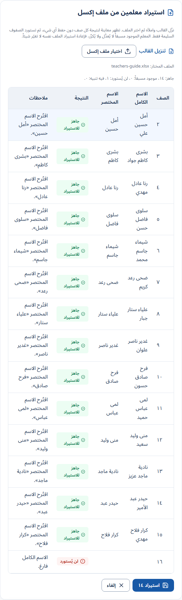
الشكل ٥-١٢: معاينة الاستيراد: صفوف جاهزة وصف فارغ لن يُستورد.
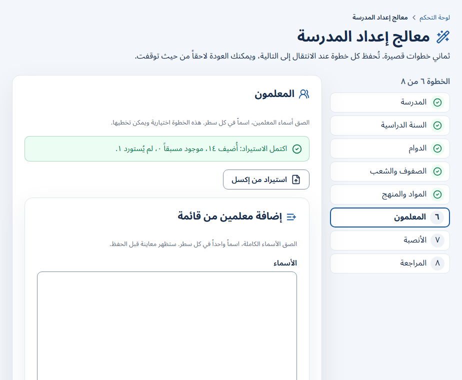
الشكل ٥-١٣: رسالة اكتمال الاستيراد.
SSTMARK0028Xالخطوة 7: الأنصبة
هنا تُسند كل مادة في كل شعبة إلى معلم. يعرض الجدول لكل بند: الشعبة والمادة وعدد الحصص أسبوعياً والمعلم والحالة («بلا معلم» أو «مُسند»). ويُظهر الشريط أعلاه عدد البنود التي لها معلم، ومجموع الحصص الأسبوعية المسندة.
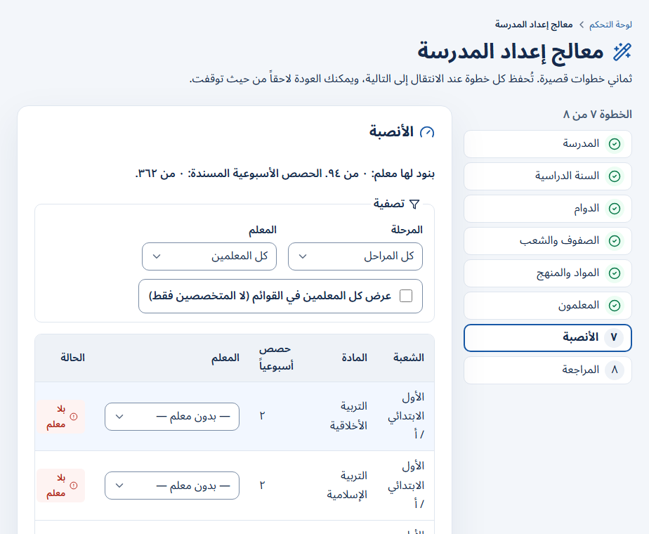
الشكل ٥-١٤: الأنصبة قبل الإسناد: كل البنود «بلا معلم».
للإسناد السريع افتح «اقتراح توزيع الأنصبة» واضغط «معاينة الاقتراح». يعرض البرنامج تعييناً مقترحاً يراعي التخصصات والسقف الأسبوعي لكل معلم، ويعرض جدول «النصاب قبل الاقتراح وبعده».
إن أعجبك التوزيع اضغط «تطبيق الاقتراح» ثم أكّد. الاقتراح لا يغيّر ما أسندته بنفسك.
عدّل أي بند بيدك باختيار معلم آخر من قائمته، أو استعمل «تصفية» لعرض مرحلة أو معلم بعينه.
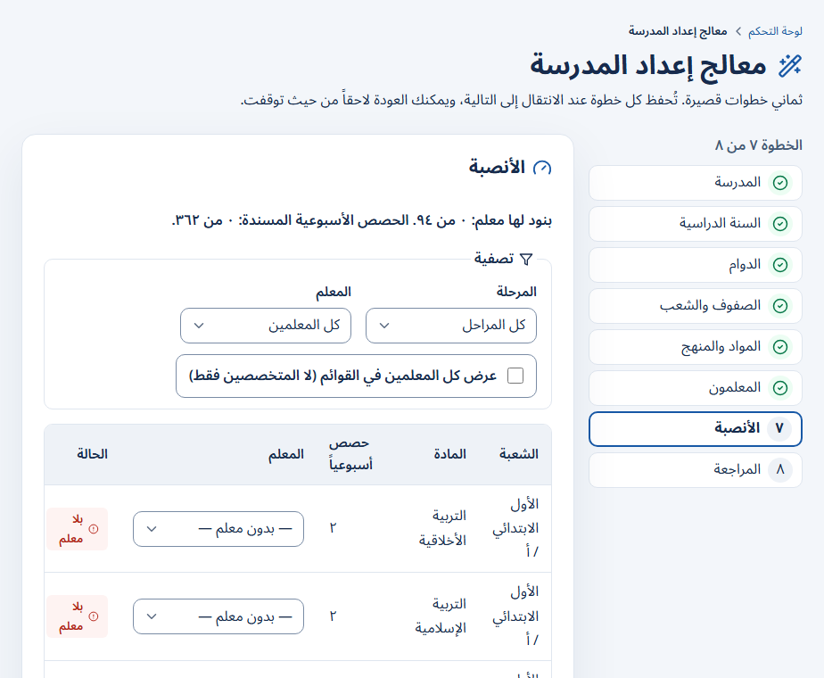
الشكل ٥-١٥: معاينة اقتراح الإسناد التلقائي (أول الاقتراح).
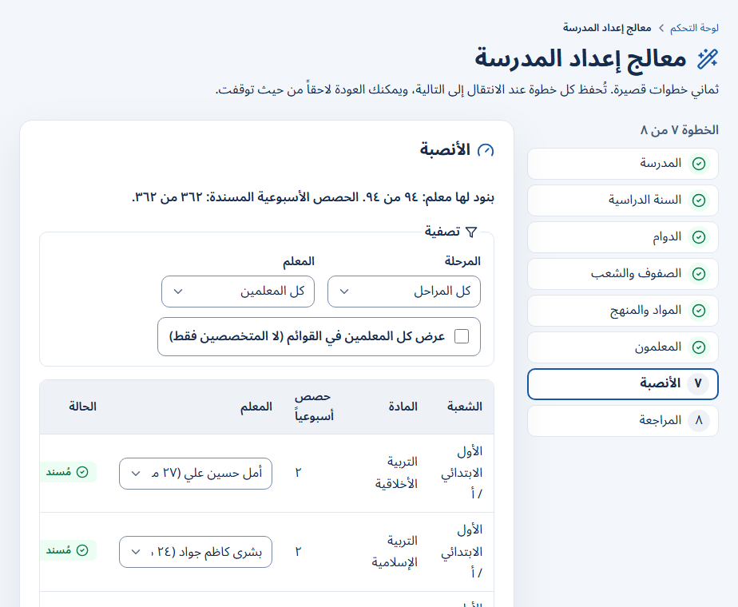
الشكل ٥-١٦: الأنصبة بعد التطبيق: كل البنود «مُسند».
SSTMARK0029Xالخطوة 8: المراجعة
تعرض المراجعة عدد المراحل والشعب والمواد وبنود المنهج والمعلمين، وأي تحذيرات. اضغط «إنهاء الإعداد» فتنتقل إلى لوحة التحكم وتصير الخطوات مكتملة.
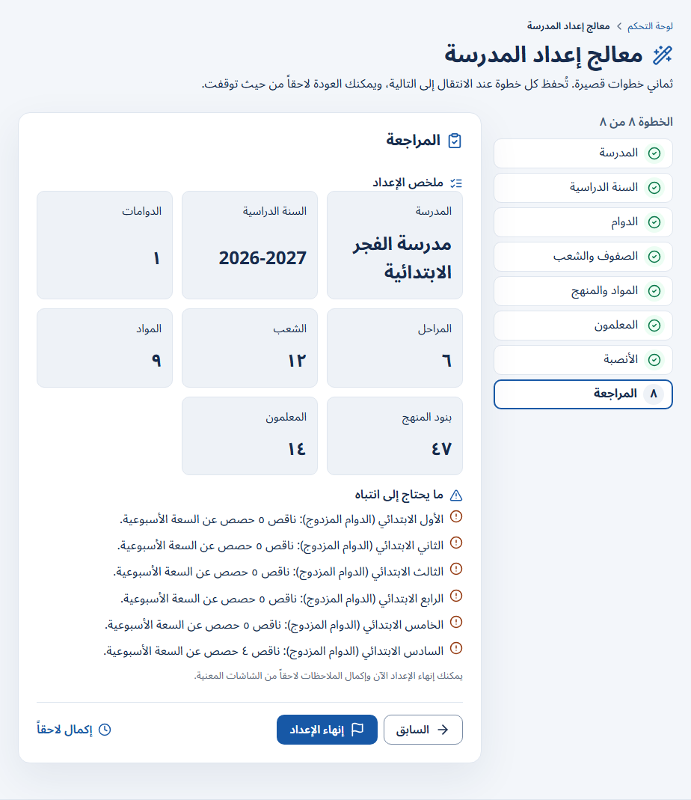
الشكل ٥-١٧: الخطوة الأخيرة: مراجعة ما أُدخل.SSTMARK0033X٦
جاهزية الجدولة
قبل التوليد افتح «الجدول ← جاهزية الجدولة». يفحص البرنامج بياناتك ويخبرك هل يمكن توليد جدول، ولماذا لا يمكن إن كان الجواب لا.
الشكل ٦-١: شاشة الجاهزية: «جاهز للتوليد»، ولكل شعبة نتائجها.
SSTMARK0031Xقراءة النتيجة
جاهز للتوليد: لا أخطاء. يمكنك المتابعة.
أخطاء (بالأحمر): تمنع التوليد، كمادة بلا معلم أو حصص تفوق سعة الأسبوع. ضع المؤشر على السطر لتعرف المطلوب، واضغط «فتح الشاشة» للذهاب إلى مكان الإصلاح.
ملاحظات/تنبيهات (بالأصفر): لا تمنع التوليد، كأن يبقى للشعبة فراغات لأن مجموع منهجها أقل من السعة.
SSTMARK0032Xأخطاء ملء الشعبة
إذا كانت حصص الشعبة تساوي فترات الأسبوع (مثلاً 30 حصة في 30 فترة) فهي ممتلئة كل يوم، فيكفي يوم إجازة لمعلم أو حدّ يومي صغير لتصبح الشعبة مستحيلة. ينبّهك البرنامج قبل التوليد بجمل واضحة تسمّي الشعبة والمادة والمعلم واليوم، مثل: «العربي للشعبة الأول / أ يحتاج 5 أيام (10 حصص، والحد اليومي حصتان) والمعلم رغد متاح 4 أيام فقط (غير متاح: الأحد)». الأنواع الأربعة:
مادة تحتاج أياماً أكثر مما يتوفر لمعلمها: عدد الأيام المطلوب = حصص المادة الأسبوعية ÷ الحد اليومي (للأعلى).
يوم لا تكفي المواد لملئه: مجموع ما تستطيع المواد وضعه في ذلك اليوم أقل من حصصه.
فترة لا معلم متاحاً فيها: لا يوجد في الشعبة أي معلم خالٍ في ذلك اليوم والحصة.
تنبيه (لا يمنع التوليد): معلمان إجازتهما اليوم نفسه ويحملان معظم حصص الشعبة.
وهناك نتيجة خاصة بالمعلم: «لا تتسع أيامه لحصصه مع أقصى الحصص المتتالية». تظهر حين يكون نصاب المعلم أكبر مما يسمح به «أقصى حصص متتالية للمعلم» (الفصل 8): خطأ يمنع التوليد إذا جعلت القاعدة إلزامية، وتنبيه فقط إذا بقيت أولوية.
SSTMARK0036X٧
توليد الجدول
من «الجدول ← التوليد» ينشئ البرنامج جدولاً يحقق كل القيود الإلزامية: لا يُطلب معلم في شعبتين في الوقت نفسه، ولا يُسند معلم في يوم إجازته أو حصة محجوبة، وتُوزَّع الحصص على أيام الأسبوع.
الشكل ٧-١: صفحة التوليد: الجاهزية وخيارات التوليد.
SSTMARK0034Xخيارات التوليد
طريقة التوليد: «عادي» (الحصص المزدوجة مفضّلة وليست إلزامية)، أو «دروس مزدوجة» (المواد المزدوجة تُوضع حصتين متتاليتين إلزامياً).
المهلة القصوى: مدة البحث (بالثواني؛ زرّا «إنقاص المهلة» و«زيادة المهلة»). عند انتهائها يُحفظ أفضل جدول وُجد. مهلة أطول قد تعطي جدولاً أفضل ترتيباً.
نتيجة قابلة للإعادة: تعطي البيانات نفسها الجدول نفسه، لكن البحث أبطأ.
خيارات متقدمة: «عدد عوامل البحث» (يضبطه البرنامج حسب حاسوبك فلا تغيّره عادةً) و«البذرة» لإعادة جدول سبق توليده.
تأكد أن الجاهزية خضراء.
اختر المهلة (60 ثانية تكفي لمعظم المدارس).
اضغط «بدء التوليد».
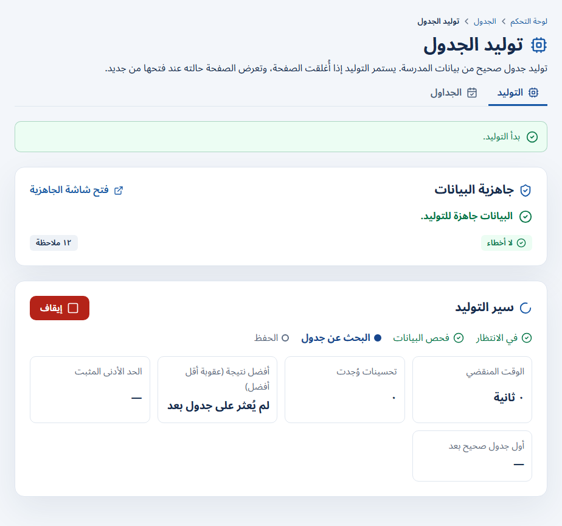
الشكل ٧-٢: أثناء التوليد: مراحل «في الانتظار / فحص البيانات / البحث عن جدول / الحفظ» والوقت المنقضي.
يمكن إغلاق الصفحة أثناء التوليد؛ يستمر في الخلفية وتعود إليه فتجد حالته. زر «إيقاف» يوقف البحث ويحفظ أفضل جدول وُجد إن وُجد.
SSTMARK0035Xالنتيجة
الشكل ٧-٣: نتيجة التوليد: «الجدول صحيح وجاهز».
الجدول صحيح وجاهز: كل القيود الإلزامية محققة. اضغط «عرض الجدول».
ما يمكن تحسينه: ملاحظات عن التفضيلات المرنة التي لم تتحقق كلياً.
تفاصيل تقنية: الحصص الموزعة، الوقت، والعقوبات لكل تفضيل (للمهتمين؛ يمكن تجاهلها).
لا يوجد جدول ممكن: يشرح البرنامج السبب بالعربية البسيطة (كمعلم عليه حصص أكثر من فراغاته) ويدلّك على الشاشة التي تصلح فيها البيانات.
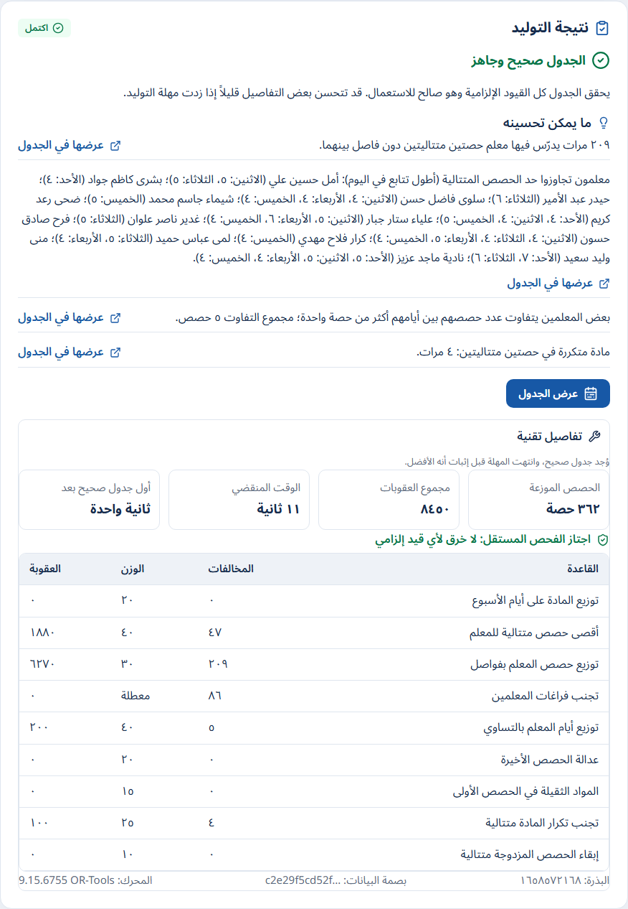
الشكل ٧-٤: بطاقة النتيجة مع «تفاصيل تقنية» مفتوحة.SSTMARK0046X٨
كيف يعمل توليد الجدول
هذا الفصل يشرح بلغة بسيطة ما يفعله البرنامج حين تضغط «بدء التوليد»: ماذا يقرأ، وما القواعد التي لا يكسرها أبداً، وما الأولويات التي يحاول تحقيقها، ولماذا قد يقول «لا يوجد جدول ممكن» وكيف تصلح ذلك.
SSTMARK0037Xما يقرأه البرنامج (المدخلات)
أيام الدوام وعدد الحصص في كل يوم لكل مرحلة، والدوام الصباحي أو المسائي.
أولويات الجدول التي اخترتها في «الإعدادات ← متقدم».
SSTMARK0038Xالقواعد الإلزامية (لا تُكسر أبداً)
كل مادة تأخذ حصصها الأسبوعية كاملة، ولكل شعبة حصة واحدة فقط في كل فترة.
حصص الشعبة تبدأ من الحصة الأولى بلا فراغ، والفراغ إن وُجد يكون في آخر اليوم.
المعلم لا يكون في مكانين في الوقت نفسه، ولا يُسند إليه شيء في يوم إجازته أو حصة محجوبة له.
لا يتجاوز المعلم حده اليومي والأسبوعي، ولا يتجاوز المورد سعته.
الحد اليومي للمادة: لا تأتي المادة في اليوم الواحد للشعبة أكثر من حدها.
أقصى حصص متتالية للمعلم، إذا جعلتها «إلزامية»: لا يُوضع للمعلم في اليوم أكثر من حصتين متتاليتين أو ثلاث. وهي في الأصل أولوية (انظر أدناه).
SSTMARK0039Xالحد اليومي للمادة: ثلاثة مستويات
تجد الجدول في «الإعدادات ← متقدم ← الحد اليومي لحصص المادة». تختار من قائمة ولا تكتب أرقاماً:
المستوى
ماذا يعني
مثال
المادة كلها
الحد في كل الشعب ما لم تختر غيره لصف أو شعبة.
الرياضيات: حصتان في اليوم
الصف
يغلب حد المادة في كل شعب هذا الصف.
الرياضيات في السادس: 3 حصص
الشعبة
الأقوى: يغلب حد الصف وحد المادة.
الرياضيات في السادس / ب: حصة واحدة
«تلقائي» في الصف أو الشعبة يعني: خذ حد المستوى الذي فوقه (ويُكتب بجانبه ما سيأخذه). «تلقائي» للمادة كلها يعني أن البرنامج يحسبه: حصتان على الأقل. «حصة واحدة في اليوم» تعني ألا تتكرر المادة في اليوم نفسه، فيلزم أن تكفي الأيام: مادة لها 6 حصص في أسبوع من 5 أيام لا يمكن أن تكون حصة واحدة يومياً، وسيخبرك فحص الجاهزية بذلك ويسمّي الشعبة والمادة.
SSTMARK0040Xأقصى حصص متتالية للمعلم
حصتان أو ثلاث فقط. الحد العام في «الإعدادات ← متقدم» (الافتراضي 3)، ويمكنك اختيار حد آخر لمعلم من بطاقته في «المعلمون» (مثلاً حصتان لمعلم نصابه خفيف). تُعدّ الحصص متتالية إذا تتابعت أرقامها، حتى لو كانت بينها فسحة.
هي في الأصل أولوية «مهم جداً»: يحاول البرنامج ألا يتجاوز الحد، فإن لم يستطع تجاوزه وأخبرك في «ما يمكن تحسينه» بكل معلم تجاوزه، مثل: «معلمون تجاوزوا حد الحصص المتتالية (أطول تتابع في اليوم): سعاد (الأحد: 4، الثلاثاء: 5)». وإن أردت ألا يتجاوزه أبداً فاختر «إلزامي لكل المعلمين» في الإعدادات، أو «إلزامي لهذا المعلم» في بطاقة معلم واحد.
هذه القاعدة تحدد أقصى ما يدرّسه المعلم في اليوم. مع 6 حصص يومياً: إذا كان الحد حصتين فأقصى ما يأخذه 4 حصص في اليوم (مثل: 1 و2، ثم 4 و5)، وإذا كان 3 فأقصاه 5 حصص. فمعلم نصابه 24 حصة في 5 أيام لا يتسع مع حد حصتين (4 × 5 = 20)، ويتسع مع حد 3 (5 × 5 = 25). إذا كانت القاعدة إلزامية يمنع فحص الجاهزية التوليد ويذكر المعلم ويقترح جعل الحد 3 أو تخفيف نصابه؛ وإذا كانت أولوية فهو تنبيه فقط.
SSTMARK0041Xالأولويات ومستوياتها
الأولويات ليست إلزامية: يحاول البرنامج تحقيقها قدر الإمكان دون كسر أي قاعدة إلزامية. لكل منها ثلاثة مستويات: «غير مهم» (لا يُراعى)، «مهم»، «مهم جداً» (يُقدَّم على غيره).
الأولوية
ماذا تفعل
الافتراضي
توزيع حصص المادة على أيام الأسبوع
لا تتجمع حصص المادة في أيام قليلة.
مهم
أقصى حصص متتالية للمعلم
لا يدرّس المعلم أكثر من حصتين أو ثلاث متتالية (يمكن جعلها إلزامية).
مهم جداً
توزيع حصص المعلم بفواصل
يترك بين حصص المعلم حصصاً فارغة يرتاح فيها.
مهم جداً
حصص المعلم متتالية بلا فراغات
العكس: يجمع حصص المعلم متتالية. لا يعمل مع السابقة في الوقت نفسه.
غير مهم
توزيع أيام المعلم بالتساوي
يتقارب عدد حصص المعلم في أيامه.
مهم جداً
عدالة الحصص الأخيرة
لا يأخذ معلم واحد الحصص الأخيرة دائماً.
مهم
المواد الثقيلة في الحصص الأولى
المواد المعلَّمة «ثقيلة» في أول اليوم.
مهم
تجنّب تكرار المادة في حصتين متتاليتين
لا تأتي المادة نفسها مرتين متتاليتين للشعبة.
مهم
إبقاء الحصة المزدوجة متتالية
حصتا المادة المزدوجة معاً.
مهم
SSTMARK0042Xتوزيع أيام المعلم بالتساوي
يحاول البرنامج أن يتقارب عدد حصص المعلم في أيامه المتاحة، فلا يزيد الفرق بين أكثر أيامه وأقلها على حصة واحدة. مثال: معلم له 18 حصة ومتاح 5 أيام تأتيه 3 أو 4 حصص يومياً، لا 4 في يوم وحصة واحدة في آخر. اليوم الذي يكون فيه المعلم متاحاً جزئياً (له فيه حصص محجوبة) يأخذ نصيباً بنسبة ما هو متاح فيه. يمكنك جعل هذا الشرط إلزامياً بخيار «جعل التوازن إلزامياً»، لكن ذلك قد يجعل التوليد مستحيلاً مع معلمين أوقاتهم محدودة، وعندها يخبرك البرنامج بالمعلم المسبب.
SSTMARK0043Xعدالة الحصص الأخيرة
الحصة الأخيرة في اليوم متعبة. يحسب البرنامج لكل معلم نصيباً من الحصص الأخيرة بنسبة نصابه الأسبوعي، ويحاول ألا يتجاوزه أحد. في الدوام المزدوج تُحسب الحصة الأخيرة في أيام الدوام المسائي بضعف وزن الصباحي. بعد التوليد تقرأ في «ما يمكن تحسينه» جملة مثل: «أكثر معلم في الحصص الأخيرة: علي (4)، وأقلهم: هدى (1)».
SSTMARK0044Xلماذا يتعذّر التوليد أحياناً؟ مثال
في مدرسة خيالية، تدرّس المعلمة سعاد اللغة العربية للشعبة «الخامس / أ»: 10 حصص في الأسبوع، والشعبة ممتلئة (30 حصة في 30 فترة). الحد اليومي للعربية «تلقائي»: حصتان في اليوم. إذن تحتاج العربية 5 أيام (10 ÷ 2). لكن سعاد في إجازة يوم الأحد، فهي متاحة 4 أيام فقط، وأقصى ما تضعه 4 × 2 = 8 حصص. يبقى حصتان بلا مكان، فلا يوجد جدول ممكن مهما طال البحث.
يكتشف فحص الجاهزية ذلك قبل التوليد ويكتب: «العربية للشعبة الخامس / أ يحتاج 5 أيام (10 حصص، والحد اليومي حصتان) والمعلم سعاد متاح 4 أيام فقط (غير متاح: الأحد)».
SSTMARK0045Xكيف تصلح ذلك
ارفع الحد اليومي للمادة في هذه الشعبة فقط: «الإعدادات ← متقدم ← الحد اليومي لحصص المادة ← العربية ← حسب الصف والشعبة ← الخامس / أ: 3 حصص». تكفي عندها 4 أيام (4 × 3 = 12).
أو غيّر يوم إجازة المعلمة إلى يوم لا يضر، أو ألغِه.
أو وزّع الحصص على معلمَين من «الأنصبة».
اضغط «إعادة الفحص» في «جاهزية الجدولة» حتى يصبح «جاهز للتوليد»، ثم ولّد الجدول.
SSTMARK0048X٩
قراءة الجداول
«الجدول ← الجداول» يعرض الإصدارات المحفوظة والجدول المفتوح. تغيّر زاوية العرض من القائمة «طريقة العرض»:
طريقة العرض
ما تراه
حسب الشعبة
جدول شعبة واحدة (اختر الشعبة من القائمة).
حسب المعلم
جدول معلم واحد ويبيّن شعبته في كل حصة، وعدد حصصه الأسبوعية.
جدول المدرسة
كل الشعب في صفحة واحدة، مرتبة حسب المراحل.
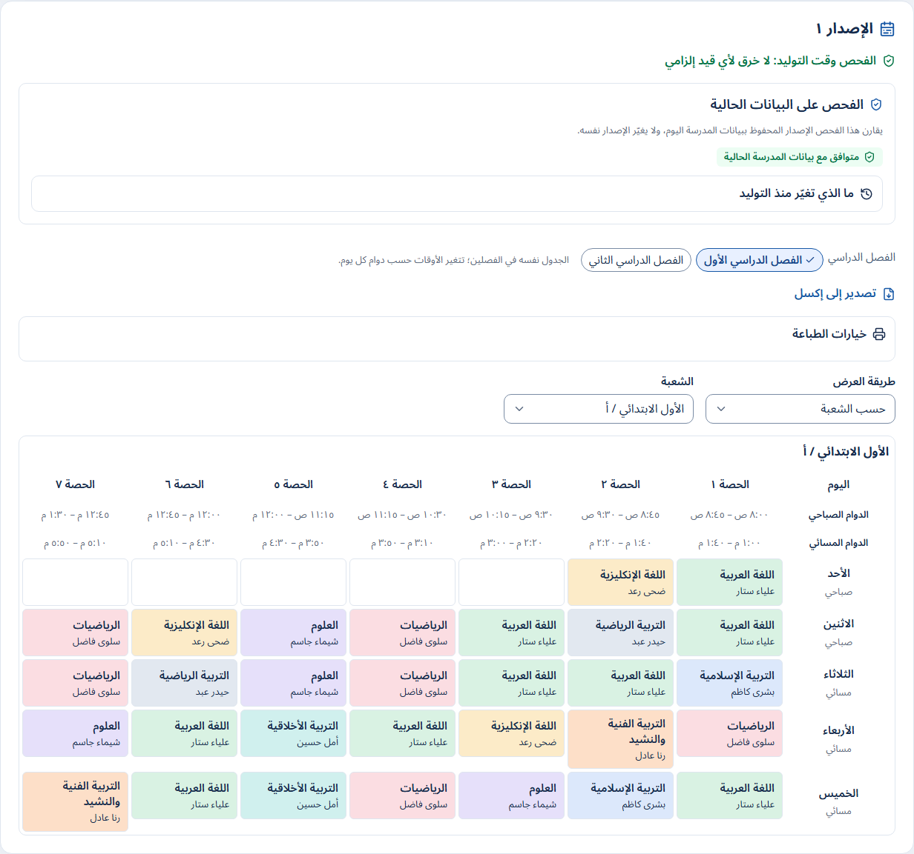
الشكل ٩-١: عرض حسب الشعبة.
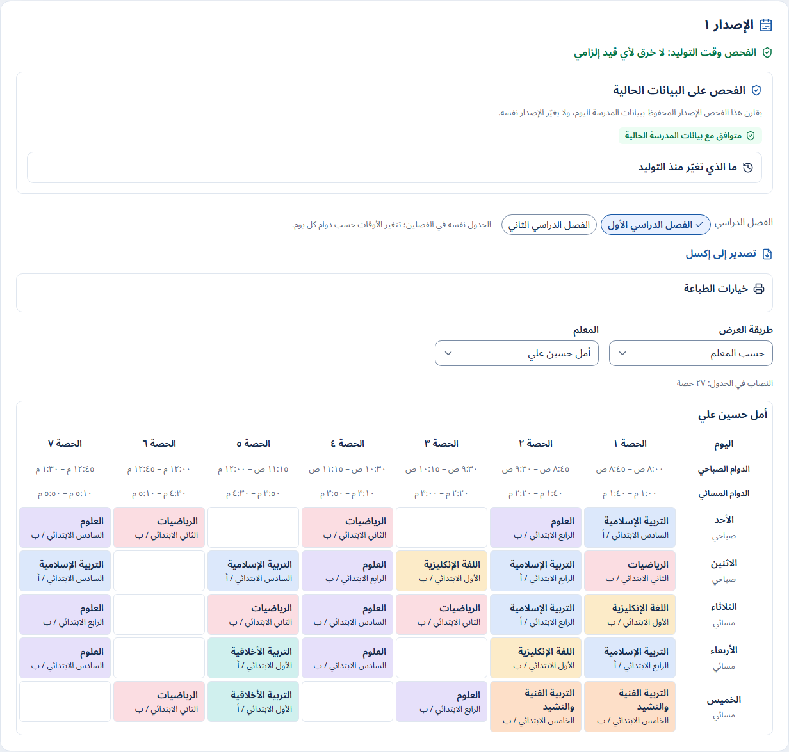
الشكل ٩-٢: عرض حسب المعلم.
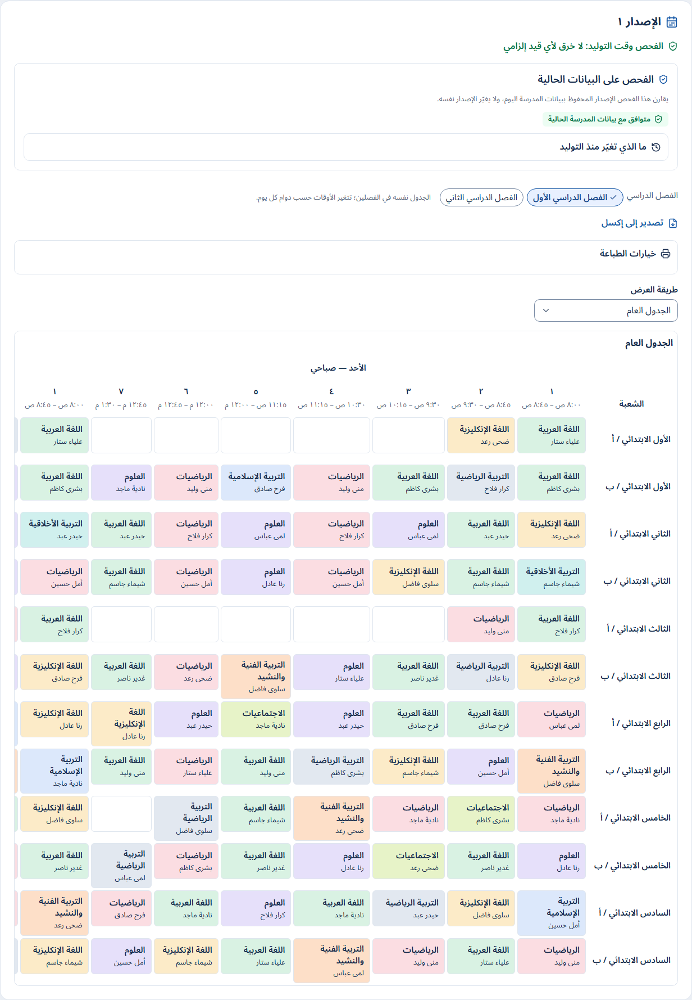
الشكل ٩-٣: جدول المدرسة كاملاً.
SSTMARK0047Xالفصل الدراسي والدوام
الجدول الأسبوعي نفسه في الفصلين، لكن أوقات الحصص تتغير حسب الدوام. اضغط «الفصل الدراسي الأول» أو «الفصل الدراسي الثاني» لترى الأوقات الصحيحة. في الدوام المزدوج يعرض الجدول صفّي أوقات الدوام الصباحي والمسائي، وكل يوم يُكتب تحته «صباحي» أو «مسائي».
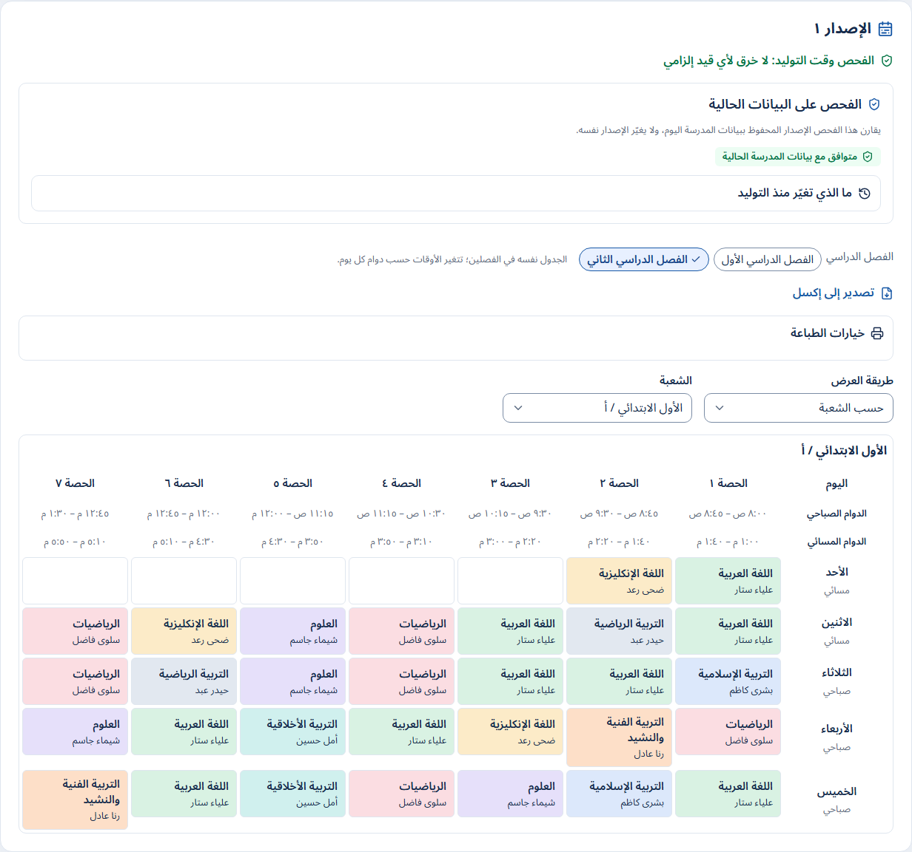
الشكل ٩-٤: الفصل الدراسي الثاني: انتقلت الأيام بين الدوامين بعد عكس التوزيع.SSTMARK0050X١٠
التعديل اليدوي
إن أردت تحريك حصة بنفسك اضغط «تعديل يدوي». يفحص البرنامج كل تغيير فور حدوثه ويمنعك من أي تعارض.
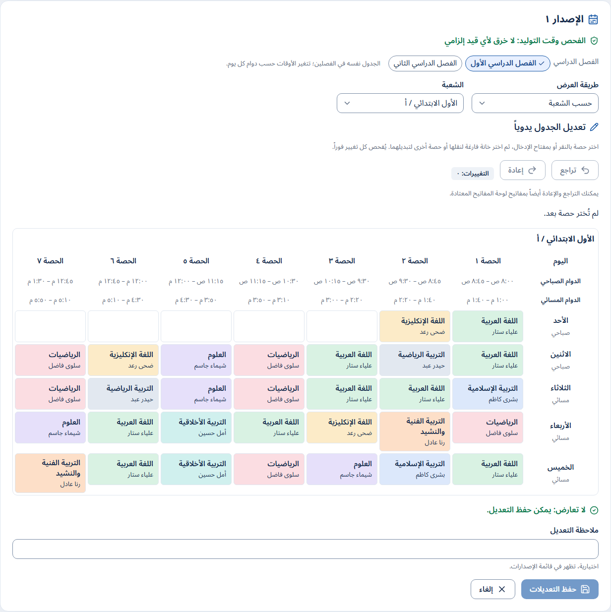
الشكل ١٠-١: وضع التعديل: التراجع والإعادة وعدّاد التغييرات.
اضغط الحصة التي تريد نقلها (أو انتقل إليها بالأسهم ومفتاح الإدخال). تظهر «الحصة المختارة».
اضغط خانة فارغة لنقلها إليها، أو حصة أخرى لتبديلهما. يمكن أيضاً اختيار الخانة من قائمة «نقل الحصة المختارة إلى» ثم «نقل».
يخبرك السطر الأخضر «لا تعارض: يمكن حفظ التعديل» أو يعرض ما يتعارض بالأحمر ولا يسمح بالحفظ.
«تراجع» و«إعادة» للتنقل بين التغييرات (وتعمل مفاتيح لوحة المفاتيح المعتادة أيضاً).
اكتب «ملاحظة التعديل» (اختيارية) ثم اضغط «حفظ التعديلات».
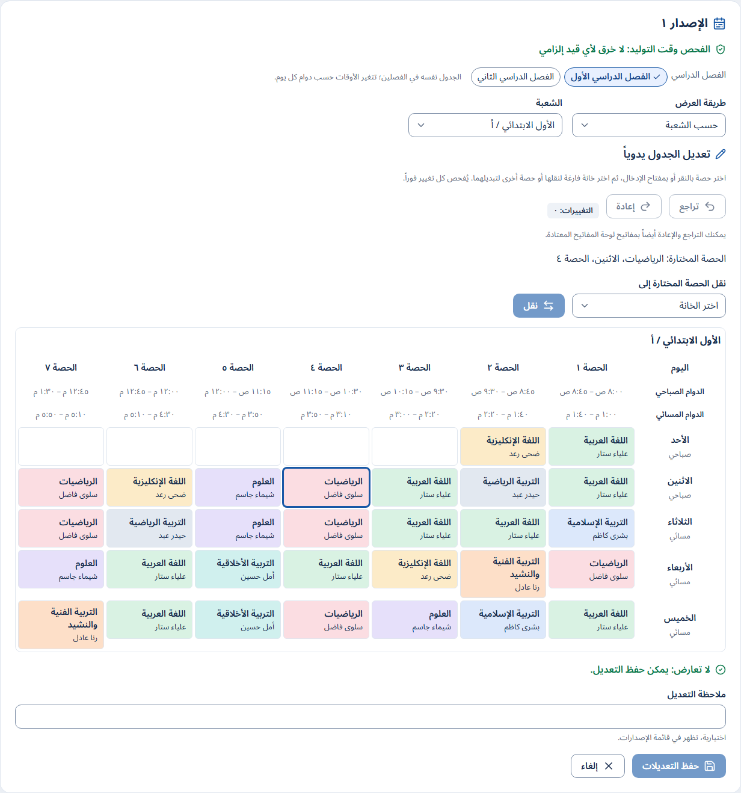
الشكل ١٠-٢: حصة مختارة وقائمة «نقل الحصة المختارة إلى».
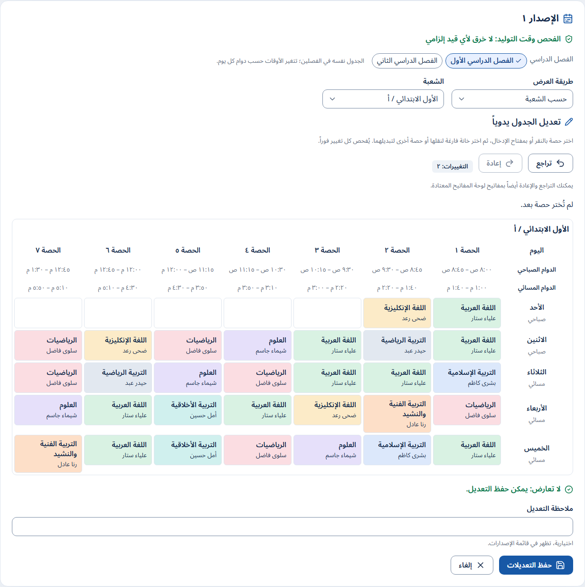
الشكل ١٠-٣: بعد تبديل حصتين: عدّاد التغييرات 2 والفحص أخضر.
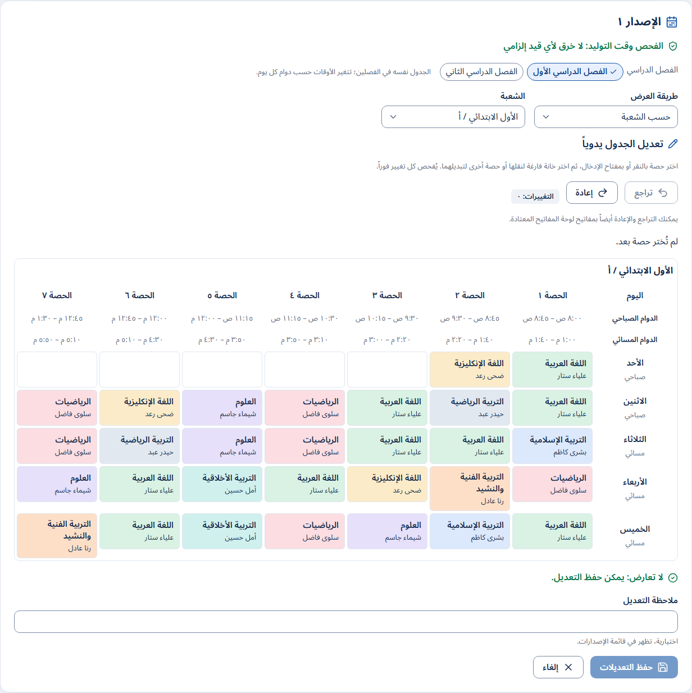
الشكل ١٠-٤: بعد «تراجع».
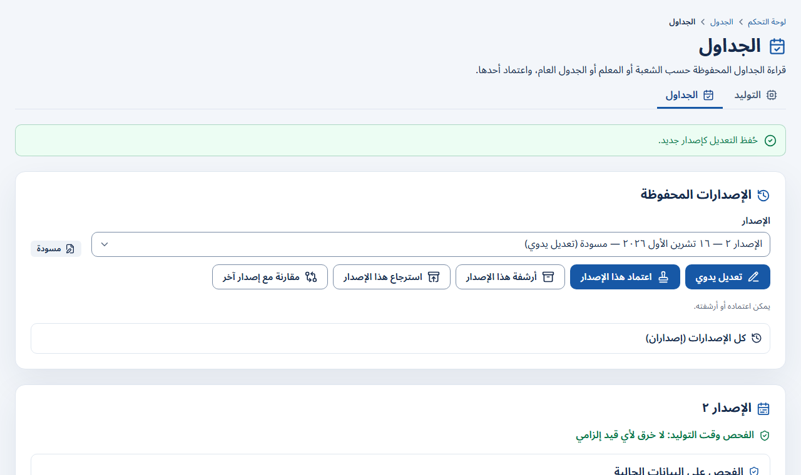
الشكل ١٠-٥: الحفظ ينشئ إصداراً جديداً.
SSTMARK0049Xالتوليد بعد تعديل يدوي
إذا ولّدت جدولاً جديداً وفي آخر إصدار تعديلات يدوية، يسألك البرنامج ماذا تفعل بها:
إبقاؤها مقفلة في أماكنها: تبقى الحصص التي نقلتها في خاناتها ويُوزَّع باقي الجدول حولها. قد لا يوجد جدول إذا تعارضت مع القيود.
تجاهلها والتوليد من جديد: يُحسب الجدول من بيانات المدرسة فقط. يبقى الإصدار المعدَّل محفوظاً في القائمة.
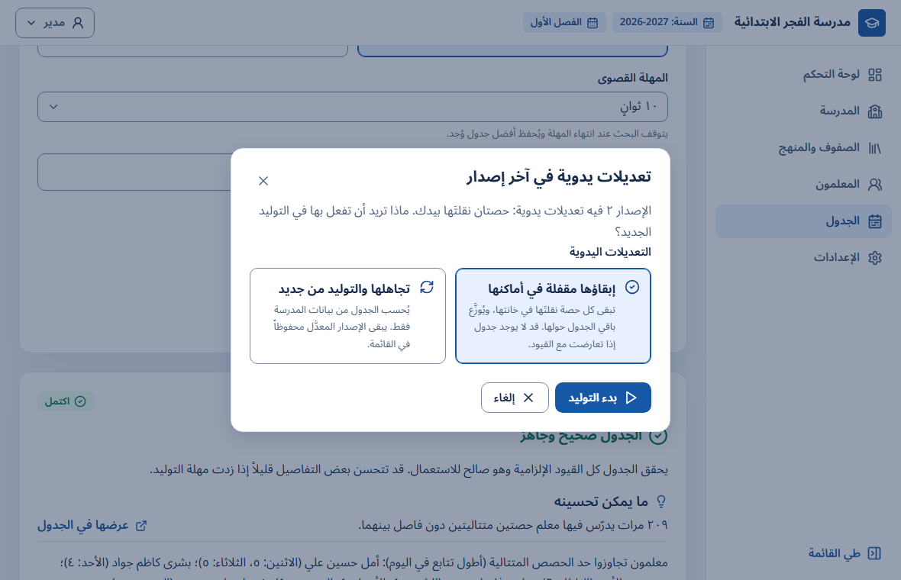
الشكل ١٠-٦: سؤال «تعديلات يدوية في آخر إصدار».SSTMARK0056X١١
الإصدارات والاعتماد وفحص التعارض
كل توليد وكل حفظ تعديل ينشئ إصداراً جديداً مرقّماً، ولا يُحذف إصدار أبداً. تُظهر قائمة «الإصدار» رقمه وتاريخه وحالته ومصدره (توليد / تعديل يدوي).
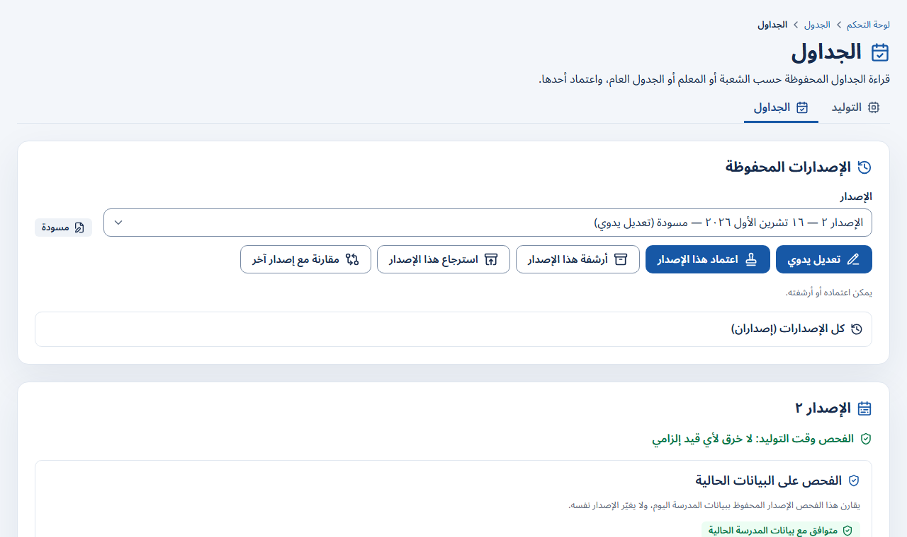
الشكل ١١-١: إصدار بحالة «مسودة»: أزرار التعديل والاعتماد والأرشفة والاسترجاع.
الحالة
المعنى
مسودة
إصدار قيد المراجعة يمكن تعديله أو اعتماده أو أرشفته.
معتمد
الجدول الرسمي المعتمد للمدرسة. واحد فقط في كل وقت.
مؤرشف
إصدار قديم محفوظ للرجوع إليه.
SSTMARK0051Xمقارنة إصدارين
اضغط «مقارنة مع إصدار آخر» واختر إصداراً. تعرض الشاشة بوضوح ما نُقل أو أُضيف أو حُذف بين الإصدارين.
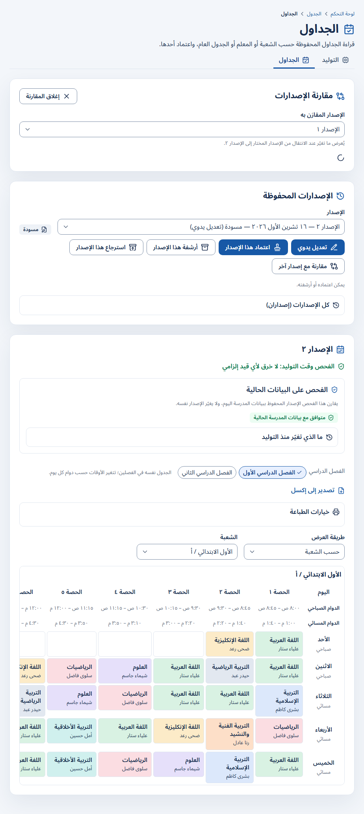
الشكل ١١-٢: مقارنة إصدارين.
SSTMARK0052Xاعتماد إصدار
اختر الإصدار الذي تريده.
اضغط «اعتماد هذا الإصدار» ثم أكّد في النافذة.
يصير هذا الإصدار «معتمداً»، ويُؤرشف المعتمد السابق تلقائياً ويبقى محفوظاً في القائمة.
الشكل ١١-٣: نافذة تأكيد الاعتماد.
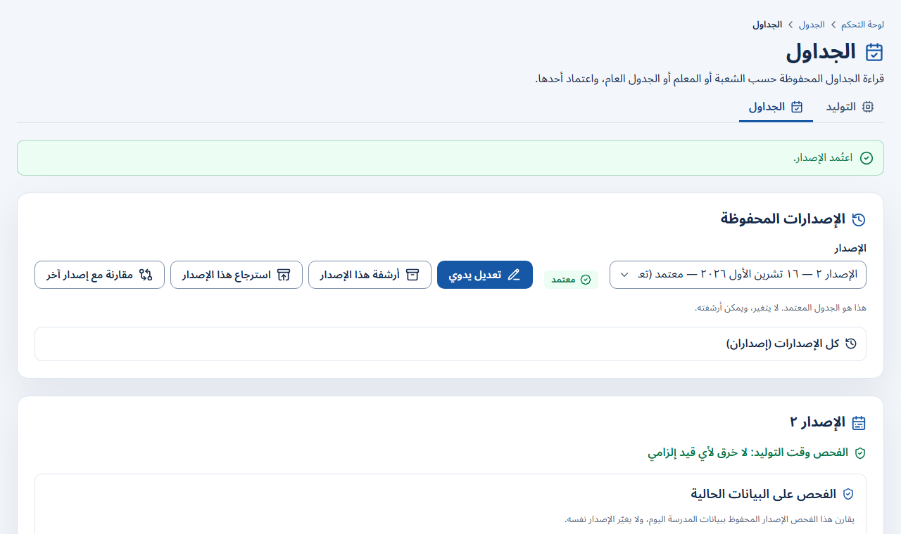
الشكل ١١-٤: إصدار معتمد.
SSTMARK0053Xاسترجاع إصدار قديم
اختر الإصدار القديم واضغط «استرجاع هذا الإصدار»: ينشأ إصدار جديد بمحتواه، ولا يُمحى شيء من السجل.
SSTMARK0054Xالفحص على بيانات اليوم
قد تتغير بيانات المدرسة بعد اعتماد الجدول: معلم يحصل على إجازة، أو ينتقل، أو يتغير نصابه. يقارن البرنامج دائماً الإصدار المحفوظ ببيانات اليوم ويعرض نتيجة الفحص في بطاقة «الفحص على البيانات الحالية»:
«متوافق مع بيانات المدرسة الحالية»: كل شيء سليم.
«يتعارض مع بيانات المدرسة الحالية»: تُعرض كل مشكلة بنص واضح، كـ«(اسم المعلم): غير متاح يوم (اليوم)، وفي الجدول (عدد) حصص فيه». زر «عرض في الجدول» يضيء الحصة المعنية بإطار أحمر.
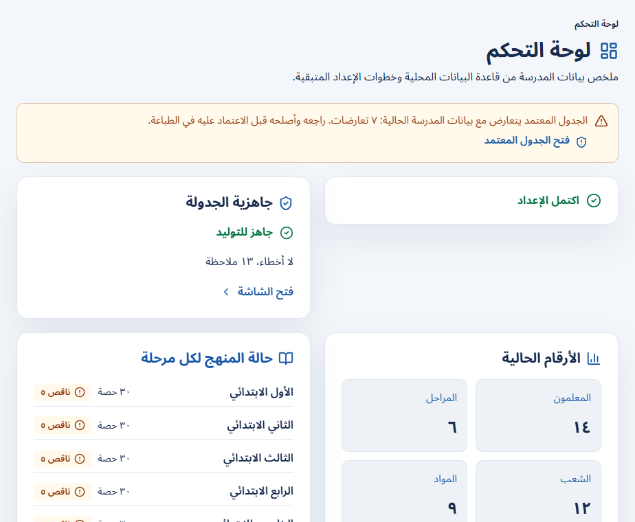
الشكل ١١-٥: تنبيه لوحة التحكم عند تعارض الجدول المعتمد مع بيانات المدرسة.
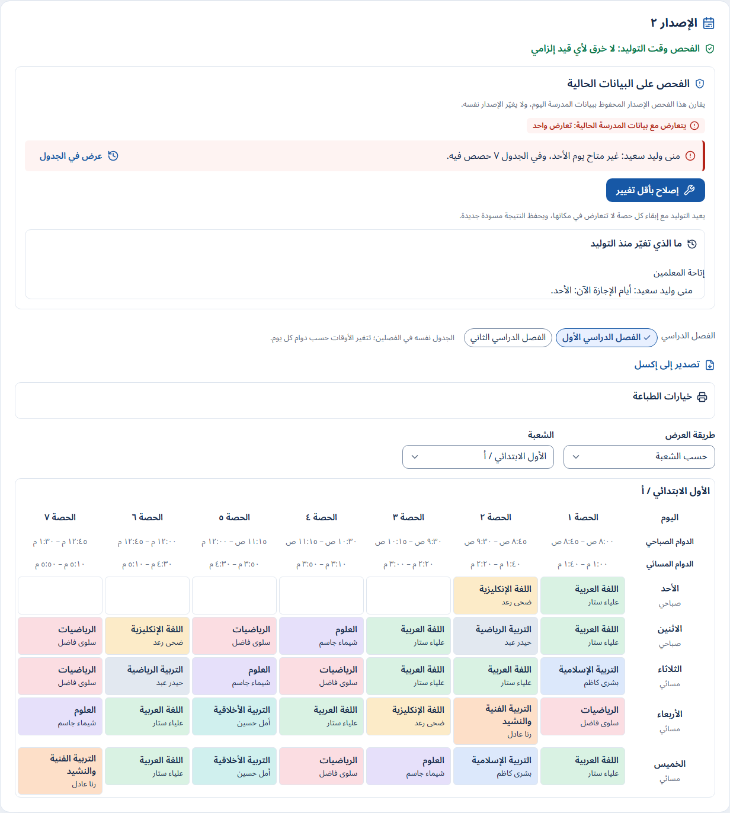
الشكل ١١-٦: الفحص على البيانات الحالية: تعارض واحد، وحصته مضاءة في الجدول.
SSTMARK0055Xإصلاح التعارض
اضغط «إصلاح بأقل تغيير»: يعيد البرنامج التوليد مع إبقاء كل حصة لا تتعارض في مكانها، ويحفظ النتيجة مسودة جديدة تراجعها ثم تعتمدها. وفي حالة تغيّر معلم يمكنك استعمال «استبدال المعلم في الجدول» لإسناد حصص معلم إلى معلم آخر دون إعادة التوليد.
SSTMARK0060X١٢
الطباعة والتصدير
اضغط «خيارات الطباعة» أسفل شريط الإصدار لفتح لوحة الطباعة.
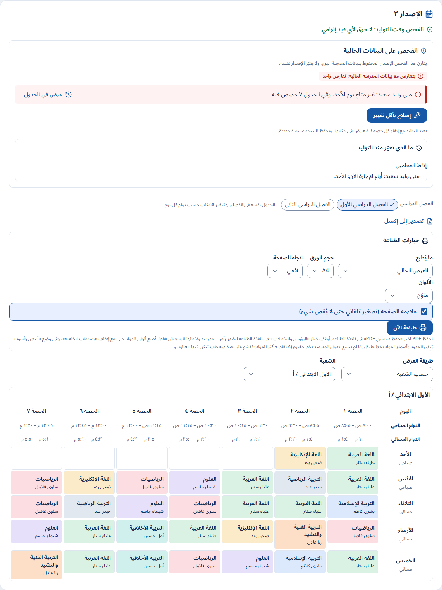
الشكل ١٢-١: لوحة «خيارات الطباعة».
SSTMARK0057Xخيارات اللوحة
الخيار
الاستعمال
ما يُطبع
«العرض الحالي»، أو «كل الشعب، شعبة في كل صفحة»، أو «كل المعلمين، معلم في كل صفحة»، أو «جدول المدرسة كاملاً»، أو «جدول المدرسة، صفحة لكل مرحلة».
حجم الورق
A4 (الافتراضي للشعبة والمعلم) أو A3 (الأنسب لجدول المدرسة كاملاً).
الشكل ١٢-٢: لوحة الطباعة مع رابط «تصدير إلى إكسل».
SSTMARK0058Xأمثلة على المطبوع
رأس كل ورقة فيه شعار المدرسة واسمها وعنوان الجدول والسنة والفصل ورقم الإصدار، وفي ذيلها اسم المدير وخانتا التوقيع والختم وتاريخ الطباعة، ورقم الصفحة.
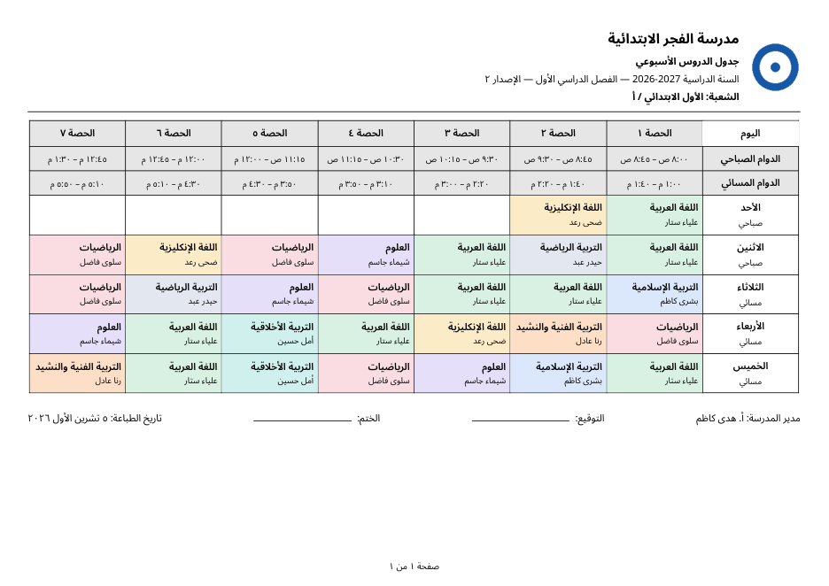
الشكل ١٢-٣: جدول شعبة بالألوان، ورق A4 أفقي.
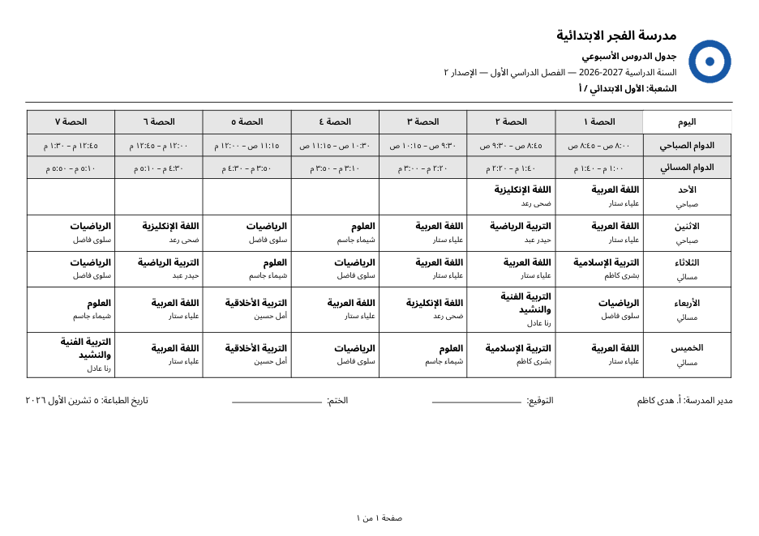
الشكل ١٢-٤: الجدول نفسه بالأبيض والأسود.
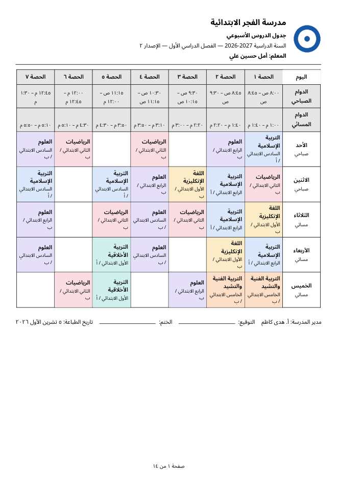
الشكل ١٢-٥: جدول معلم، ورق A4 عمودي (صفحة لكل معلم).
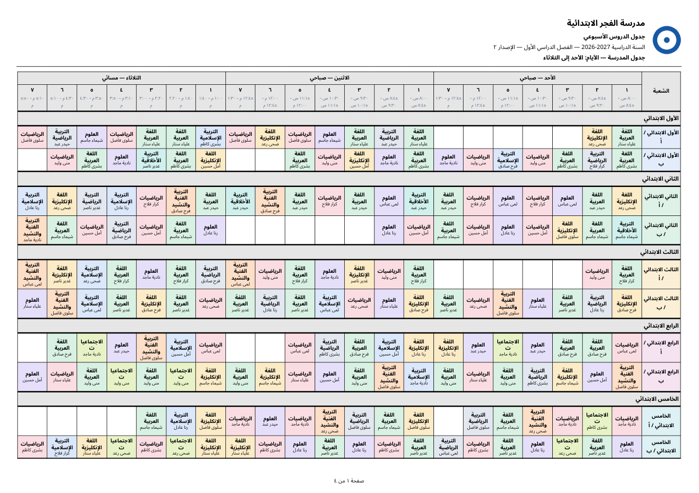
الشكل ١٢-٦: جدول المدرسة كاملاً على ورق A3 (أربع صفحات).
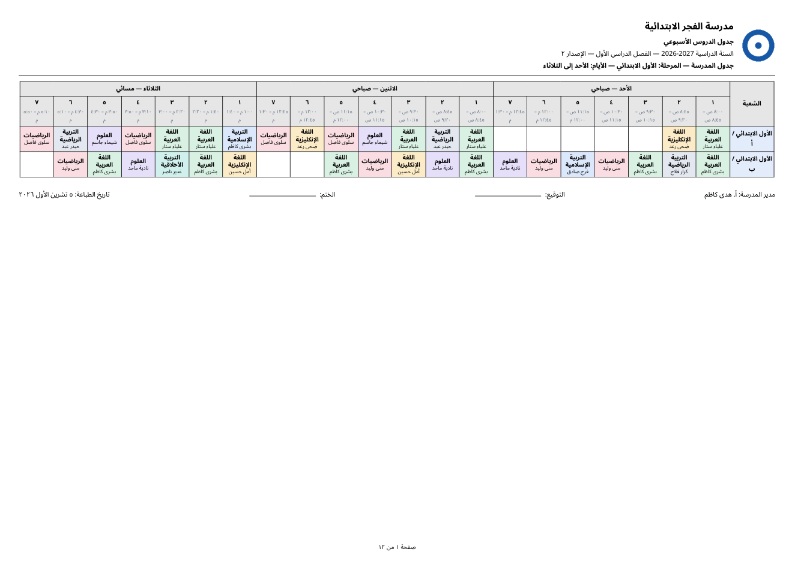
الشكل ١٢-٧: «صفحة لكل مرحلة»: كل مرحلة وشعبها على صفحة مستقلة (الأولى في الصورة).
SSTMARK0059Xالتصدير إلى إكسل
اضغط «تصدير إلى إكسل» فينزل ملف .xlsx يحوي الجدول المعروض بأوراق مرتبة. يمكنك فتحه في إكسل وتعديله وطباعته بما يناسبك. يُحفظ الملف في المكان الذي يحدده متصفحك أو نافذة البرنامج للتنزيل.
SSTMARK0068X١٣
الإعدادات
من «الإعدادات» ست صفحات في شريط التبويب أعلاها.
SSTMARK0061Xعام
السمة: «حسب نظام التشغيل» أو «فاتحة» أو «داكنة».
الأرقام: أرقام عربية مشرقية (١٢٣) أو غربية (123) تظهر في كل البرنامج.
الفصل الذي يفتح عليه عرض الجداول: تلقائي حسب تواريخ السنة، أو الفصل الأول، أو الثاني.
إعدادات الطباعة الافتراضية لكل نوع جدول (الشعبة والمعلم والمدرسة): حجم الورق والاتجاه، وخيار «ملاءمة الصفحة». يمكن تغييرها لكل طباعة على حدة.
معالج الإعداد: زر لإعادة فتحه لمراجعة بيانات المدرسة دون حذف أي سجل.
اضغط «حفظ التفضيلات» لتُحفظ التغييرات.
الشكل ١٣-١: الإعدادات: عام.
SSTMARK0062Xالحساب والأمان
اسم المستخدم: غيّره بعد إدخال كلمة المرور الحالية.
كلمة المرور: غيّرها بإدخال الحالية والجديدة وتأكيدها. بعد التغيير تُغلق كل الجلسات وتدخل بالكلمة الجديدة.
رمز الاسترداد: أنشئ رمزاً جديداً إن فقدت القديم؛ يتوقف القديم عن العمل فوراً. احفظ الجديد كما في الفصل 2.
القفل التلقائي: اختر المدة التي تُقفل بعدها الجلسة عند عدم الاستعمال.
الشكل ١٣-٢: الإعدادات: الحساب والأمان.
SSTMARK0063Xالنسخ الاحتياطي
النسخة الاحتياطية ملف واحد فيه كل بيانات مدرستك. هي وسيلتك الوحيدة لحماية عملك من عطل الحاسوب أو فقدانه، وهي أيضاً وسيلة نقل البيانات إلى حاسوب آخر (الفصل 14).
اختر مجلد النسخ الاحتياطي: اضغط «اختيار مجلد» ثم حدد مجلداً على قرص خارجي أو ذاكرة USB إن أمكن (لا يغني مجلد على القرص نفسه عن النسخ الخارجي). إن لزم اضغط «إدخال المسار يدوياً».
اضغط «إنشاء نسخة احتياطية» لحفظ نسخة فورية.
فعّل «نسخة احتياطية تلقائية يومياً»: يحفظ البرنامج نسخة عند التشغيل ثم مرة كل يوم دون تدخل منك.
اختر عدد النسخ التلقائية المحفوظة (3 أو 7 أو 14 أو 30): عند تجاوز العدد تُحذف أقدم النسخ التلقائية فقط بعد التأكد من سلامة النسخة الأحدث. لا تُحذف أبداً نسخك التي أنشأتها بنفسك ولا نسخ ما قبل الاستعادة أو الترقية. ثم «حفظ إعدادات النسخ».
الشكل ١٣-٣: الإعدادات: النسخ الاحتياطي، وقائمة النسخ وحالتها.
SSTMARK0064Xاستعادة نسخة
اختر المجلد الذي توجد فيه النسخة (إن كانت في مكان آخر) فتظهر قائمة النسخ بحالتها: «سليمة وصالحة للاستعادة».
اضغط «اختيار» على النسخة المطلوبة.
فعّل المربع «أفهم أن بيانات المدرسة الحالية ستُستبدل بمحتوى هذه النسخة» ثم اضغط «استعادة» وأكّد.
يحفظ البرنامج تلقائياً نسخة بحالتك الحالية باسم «pre-restore» قبل الاستبدال، ثم تُستعاد النسخة المختارة وتُطلب منك كلمة المرور.
SSTMARK0065Xمتقدم
«أولويات الجدول» تحدد أهمية تفضيلات التوليد المرنة: توزيع حصص المادة على أيام الأسبوع، وتوزيع حصص المعلم بفواصل (أو جعلها متتالية)، وتوزيع أيام المعلم بالتساوي، وعدالة الحصص الأخيرة، والمواد الثقيلة في الحصص الأولى، وتجنّب تكرار المادة في حصتين متتاليتين، وإبقاء الحصة المزدوجة متتالية. اختر لكل منها «غير مهم» أو «مهم» أو «مهم جداً». وفي البطاقة نفسها «أقصى حصص متتالية للمعلم» (حصتان أو ثلاث). القيود الإلزامية (كعدم تعارض المعلم) تُحترم دائماً مهما اخترت. شرح كل ذلك في الفصل «كيف يعمل توليد الجدول».
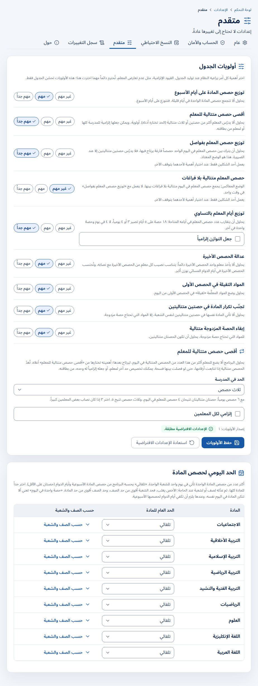
الشكل ١٣-٤: الإعدادات: متقدم (أولويات الجدول).
تحت الأولويات بطاقة «الحد اليومي لحصص المادة»: أكثر عدد من حصص المادة الواحدة يأتي في يوم واحد للشعبة الواحدة. «تلقائي» يحسبه البرنامج (حصتان على الأقل)، ويمكنك اختياره من حصة واحدة إلى 6 حصص للمادة كلها، ثم لصف أو لشعبة معينة من «حسب الصف والشعبة».
SSTMARK0066Xسجل التغييرات
سجل للقراءة فقط بكل ما تغيّر في البرنامج على هذا الحاسوب، الأحدث أولاً: بيانات المدرسة، التوليد، الجداول، النسخ الاحتياطي، الاستيراد. يمكن تصفيته بـ«نوع التغيير». لا يُحذف منه شيء.
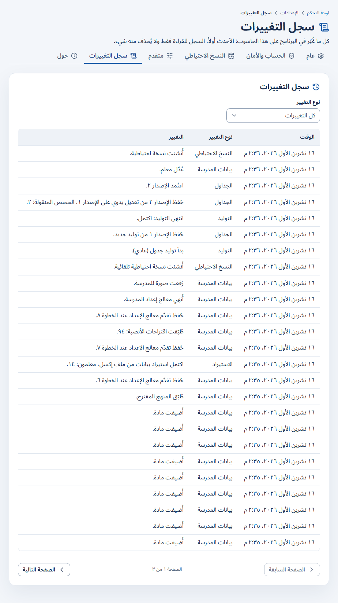
الشكل ١٣-٥: الإعدادات: سجل التغييرات.
SSTMARK0067Xحول
يعرض رقم الإصدار وتاريخ البناء وإصدار قاعدة البيانات واسم المطوّر والترخيص وتراخيص المكوّنات الخارجية. وفيه:
فتح مجلد البيانات: يفتح مجلد بياناتك في مستكشف الملفات.
للتواصل والدعم: واتساب 07806421980 وتلغرام @jaafar_Wafqan؛ الرقم والمعرّف مكتوبان نصاً، وتفتح الروابط في متصفح الإنترنت الافتراضي.
تصدير سجل الدعم: ينشئ ملفاً نصياً فيه رقم الإصدار ومعلومات الجهاز وآخر رسائل التشغيل لإرساله إلى المطوّر عند حدوث مشكلة. لا يحتوي على كلمات مرور أو رموز أو أسماء معلمين أو طلاب.
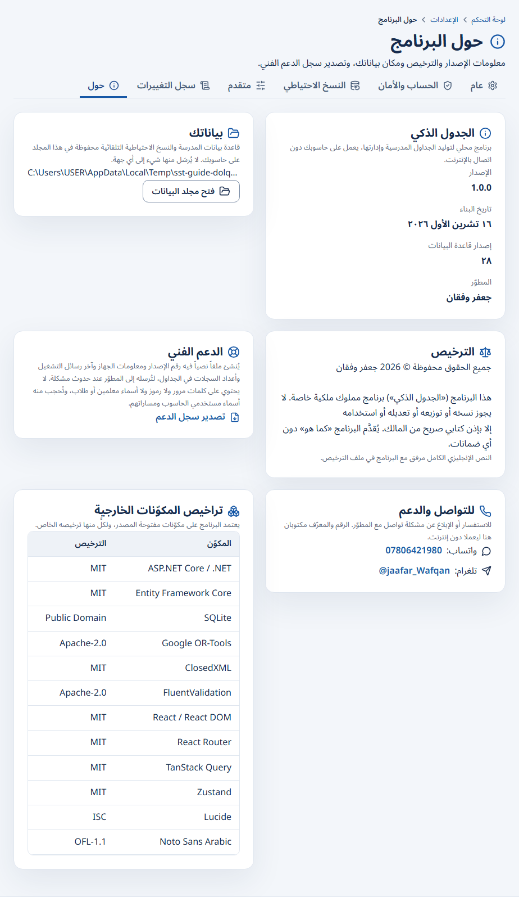
الشكل ١٣-٦: الإعدادات: حول البرنامج.SSTMARK0073X١٤
الترقية والإزالة ونقل البيانات
SSTMARK0069Xأين تُحفظ بياناتك؟
تُحفظ قاعدة البيانات في مجلد بيانات المستخدم: %LOCALAPPDATA%\SmartSchoolTimetable (يمكنك فتحه من «الإعدادات ← حول ← فتح مجلد البيانات»). ملفات البرنامج نفسه في مجلد التثبيت منفصلة عنها.
SSTMARK0070Xترقية البرنامج إلى إصدار أحدث
خُذ نسخة احتياطية يدوية أولاً (الفصل 13) على قرص خارجي.
أغلق البرنامج («إيقاف» من أيقونة منطقة الإشعارات).
شغّل ملف المثبّت الجديد؛ يثبّت فوق القديم في المجلد نفسه ويحافظ على بياناتك.
عند أول تشغيل يحدّث البرنامج بنية قاعدة البيانات تلقائياً بعد أن يحفظ نسخة منها قبل الترقية؛ وإن فشلت الترقية لأي سبب يستعيد النسخة ويعرض رسالة واضحة.
على الحاسوب القديم: «الإعدادات ← النسخ الاحتياطي»، اضغط «إنشاء نسخة احتياطية». ستجد اسم الملف، مثل «timetable-backup-20261011-151225.db»، في مجلد النسخ.
انسخ هذا الملف إلى ذاكرة USB.
على الحاسوب الجديد: ثبّت البرنامج (الفصل 1) وأنشئ حساباً مؤقتاً عند أول تشغيل (الفصل 2)، واحفظ رمز الاسترداد المؤقت.
انسخ الملف إلى مجلد على الحاسوب الجديد، وفي «الإعدادات ← النسخ الاحتياطي» اضغط «اختيار مجلد» وحدد ذلك المجلد.
اختر النسخة من القائمة، وفعّل مربع التأكيد، واضغط «استعادة».
سجّل الدخول بحساب الحاسوب القديم (اسم المستخدم وكلمة المرور القديمين). وصل كل شيء: المدرسة والمعلمون والجداول وإصداراتها.
SSTMARK0076X١٥
حل المشكلات والأسئلة الشائعة
المشكلة
الحل
حماية ويندوز تمنع تشغيل المثبّت
اضغط «More info» ثم «Run anyway» (الفصل 1).
«هذا البرنامج يحتاج ويندوز 64-بت»
الحاسوب بنسخة 32-بت ولا يدعمها البرنامج. استعمل حاسوباً 64-بت.
لا تظهر نافذة البرنامج
افتحه من اختصار سطح المكتب، وانتظر نحو 15 ثانية بعد التثبيت أو إعادة التشغيل. ابحث عن أيقونته قرب الساعة. إن لم يفتح فأغلق أي نسخة أخرى منه (من «إيقاف») وأعد المحاولة.
«تعذّر تشغيل البرنامج»
أغلق أي نسخة أخرى ثم افتحه. إن تكرر ذلك أرسل «سجل الدعم» إلى المطوّر (الإعدادات ← حول).
«ملفات البرنامج ناقصة. أعد تثبيت البرنامج»
أعد تشغيل المثبّت؛ بياناتك لا تتأثر.
فُتح البرنامج في المتصفح لا في نافذة
مكوّن العرض المدمج غير مثبّت على الحاسوب؛ البرنامج يعمل في المتصفح كما هو. لا تُغلق المتصفح قبل إنهاء عملك، واستعمل أيقونة منطقة الإشعارات للإيقاف.
المنفذ مشغول
يختار البرنامج تلقائياً منفذاً آخر إن كان المنفذ المعتاد (5080) مشغولاً؛ لا إجراء مطلوب.
نسيت كلمة المرور
استعمل «نسيت كلمة المرور؟» ورمز الاسترداد (الفصل 2).
فقدت كلمة المرور ورمز الاسترداد
لا توجد طريقة لاستعادة الحساب. إن كانت لديك نسخة احتياطية قديمة أُخذت قبل تغيير كلمة المرور فاستعدها وادخل بكلمتها وقتها.
«الجدول المعتمد يتعارض مع بيانات المدرسة»
اتّبع الفصل 11: «إصلاح بأقل تغيير» أو «استبدال المعلم في الجدول».
لا يوجد جدول ممكن
اقرأ السبب المعروض بعد التوليد وأصلح البيانات المذكورة (غالباً معلم عليه حصص أكثر من أيامه المتاحة، أو منهج يفوق سعة الأسبوع).
التوليد بطيء
أغلق البرامج الأخرى، واختر مهلة أقصر أو أطول حسب الحاجة. المدارس الكبيرة (أربعون شعبة) قد تحتاج دقيقة أو أكثر على حاسوب بذاكرة 4 جيجابايت.